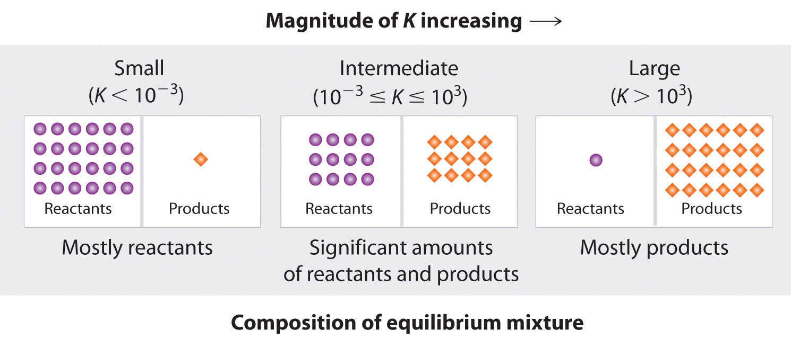
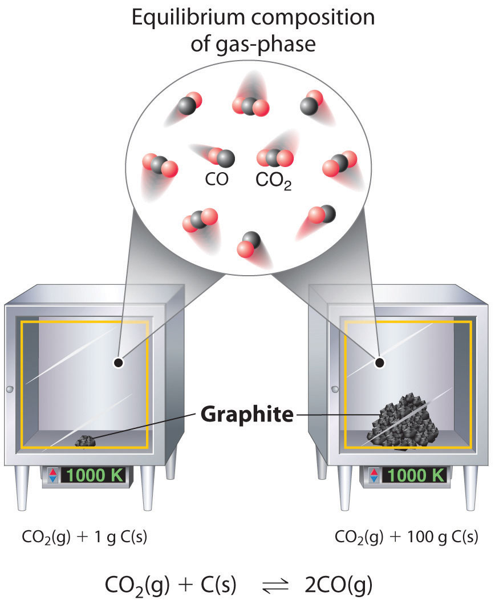
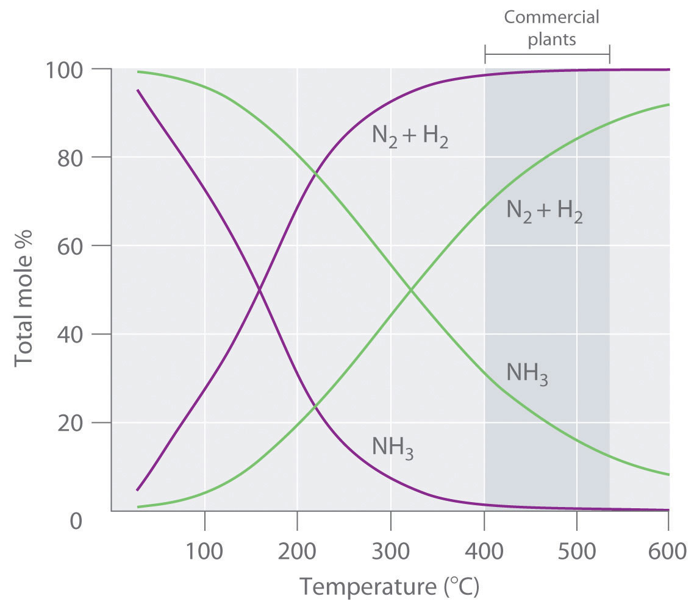
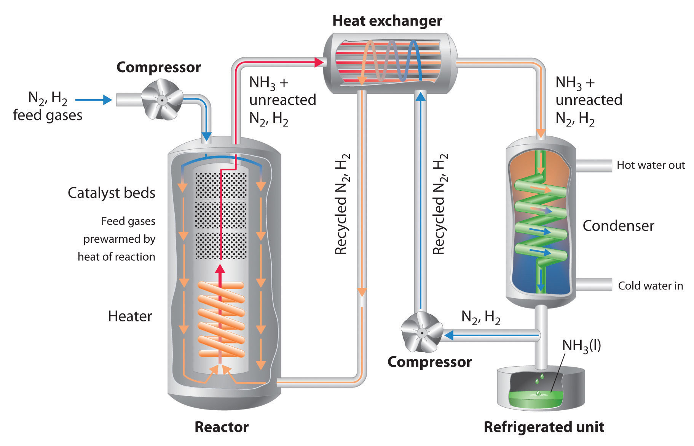

In Chapter 14 "Chemical Kinetics", we discussed the principles of chemical kinetics, which deal with the rate of change, or how quickly a given chemical reaction occurs. We now turn our attention to the extent to which a reaction occurs and how reaction conditions affect the final concentrations of reactants and products. For most of the reactions that we have discussed so far, you may have assumed that once reactants are converted to products, they are likely to remain that way. In fact, however, virtually all chemical reactions are reversible to some extent. That is, an opposing reaction occurs in which the products react, to a greater or lesser degree, to re-form the reactants. Eventually, the forward and reverse reaction rates become the same, and the system reaches chemical equilibriumThe point at which the forward and reverse reaction rates become the same so that the net composition of the system no longer changes with time., the point at which the composition of the system no longer changes with time.
A smoggy sunset in Shenzhen, China. The reaction of O2 with N2 at high temperature in an internal combustion engine produces small amounts of NO, which reacts with atmospheric O2 to form NO2, an important component of smog. The reddish-brown color of NO2 is responsible for the characteristic color of smog, as shown in this true-color photo.
We introduced the concept of equilibrium in Chapter 11 "Liquids", where you learned that a liquid and a vapor are in equilibrium when the number of molecules evaporating from the surface of the liquid per unit time is the same as the number of molecules condensing from the vapor phase. Vapor pressure is an example of a physical equilibrium because only the physical form of the substance changes. Similarly, in Chapter 13 "Solutions", we discussed saturated solutions, another example of a physical equilibrium, in which the rate of dissolution of a solute is the same as the rate at which it crystallizes from solution.
In this chapter, we describe the methods chemists use to quantitatively describe the composition of chemical systems at equilibrium, and we discuss how factors such as temperature and pressure influence the equilibrium composition. As you study these concepts, you will also learn how urban smog forms and how reaction conditions can be altered to produce H2 rather than the combustion products CO2 and H2O from the methane in natural gas. You will discover how to control the composition of the gases emitted in automobile exhaust and how synthetic polymers such as the polyacrylonitrile used in sweaters and carpets are produced on an industrial scale.
Chemical equilibrium is a dynamic process that consists of a forward reaction, in which reactants are converted to products, and a reverse reaction, in which products are converted to reactants. At equilibrium, the forward and reverse reactions proceed at equal rates. Consider, for example, a simple system that contains only one reactant and one product, the reversible dissociation of dinitrogen tetroxide (N2O4) to nitrogen dioxide (NO2). You may recall from Chapter 14 "Chemical Kinetics" that NO2 is responsible for the brown color we associate with smog. When a sealed tube containing solid N2O4 (mp = −9.3°C; bp = 21.2°C) is heated from −78.4°C to 25°C, the red-brown color of NO2 appears (Figure 15.1 "The "). The reaction can be followed visually because the product (NO2) is colored, whereas the reactant (N2O4) is colorless:
Equation 15.1
The double arrow indicates that both the forward and reverse reactions are occurring simultaneously; it is read “is in equilibrium with.”
Figure 15.1 The System at Different Temperatures

(left) At dry ice temperature (−78.4°C), the system contains essentially pure solid N2O4, which is colorless. (center) As the system is warmed above the melting point of N2O4 (−9.3°C), the N2O4 melts and then evaporates, and some of the vapor dissociates to red-brown NO2. (right) Eventually the sample reaches room temperature, and a mixture of gaseous N2O4 and NO2 is present. The composition of the mixture and hence the color do not change further with time: the system has reached equilibrium at the new temperature.
Figure 15.2 "The Composition of N" shows how the composition of this system would vary as a function of time at a constant temperature. If the initial concentration of NO2 were zero, then it increases as the concentration of N2O4 decreases. Eventually the composition of the system stops changing with time, and chemical equilibrium is achieved. Conversely, if we start with a sample that contains no N2O4 but an initial NO2 concentration twice the initial concentration of N2O4 in part (a) in Figure 15.2 "The Composition of N", in accordance with the stoichiometry of the reaction, we reach exactly the same equilibrium composition, as shown in part (b) in Figure 15.2 "The Composition of N". Thus equilibrium can be approached from either direction in a chemical reaction.
Figure 15.2 The Composition of N2O4/NO2 Mixtures as a Function of Time at Room Temperature

(a) Initially, this idealized system contains 0.0500 M gaseous N2O4 and no gaseous NO2. The concentration of N2O4 decreases with time as the concentration of NO2 increases. (b) Initially, this system contains 0.1000 M NO2 and no N2O4. The concentration of NO2 decreases with time as the concentration of N2O4 increases. In both cases, the final concentrations of the substances are the same: [N2O4] = 0.0422 M and [NO2] = 0.0156 M at equilibrium.
Figure 15.3 "The Forward and Reverse Reaction Rates as a Function of Time for the " shows the forward and reverse reaction rates for a sample that initially contains pure NO2. Because the initial concentration of N2O4 is zero, the forward reaction rate (dissociation of N2O4) is initially zero as well. In contrast, the reverse reaction rate (dimerization of NO2) is initially very high (2.0 × 106 M/s), but it decreases rapidly as the concentration of NO2 decreases. (Recall from Chapter 14 "Chemical Kinetics" that the reaction rate of the dimerization reaction is expected to decrease rapidly because the reaction is second order in NO2: rate = kr[NO2]2, where kr is the rate constant for the reverse reaction shown in Equation 15.1.) As the concentration of N2O4 increases, the rate of dissociation of N2O4 increases—but more slowly than the dimerization of NO2—because the reaction is only first order in N2O4 (rate = kf[N2O4], where kf is the rate constant for the forward reaction in Equation 15.1). Eventually, the forward and reverse reaction rates become identical, kF = kr, and the system has reached chemical equilibrium. If the forward and reverse reactions occur at different rates, then the system is not at equilibrium.
Figure 15.3 The Forward and Reverse Reaction Rates as a Function of Time for the System Shown in Part (b) in Figure 15.2 "The Composition of N"

The rate of dimerization of NO2 (reverse reaction) decreases rapidly with time, as expected for a second-order reaction. Because the initial concentration of N2O4 is zero, the rate of the dissociation reaction (forward reaction) at t = 0 is also zero. As the dimerization reaction proceeds, the N2O4 concentration increases, and its rate of dissociation also increases. Eventually the rates of the two reactions are equal: chemical equilibrium has been reached, and the concentrations of N2O4 and NO2 no longer change.
At equilibrium, the forward reaction rate is equal to the reverse reaction rate.
The three reaction systems (1, 2, and 3) depicted in the accompanying illustration can all be described by the equation where the blue circles are A and the purple ovals are B. Each set of panels shows the changing composition of one of the three reaction mixtures as a function of time. Which system took the longest to reach chemical equilibrium?

Given: three reaction systems
Asked for: relative time to reach chemical equilibrium
Strategy:
Compare the concentrations of A and B at different times. The system whose composition takes the longest to stabilize took the longest to reach chemical equilibrium.
Solution:
In systems 1 and 3, the concentration of A decreases from t0 through t2 but is the same at both t2 and t3. Thus systems 1 and 3 are at equilibrium by t3. In system 2, the concentrations of A and B are still changing between t2 and t3, so system 2 may not yet have reached equilibrium by t3. Thus system 2 took the longest to reach chemical equilibrium.
Exercise
In the following illustration, A is represented by blue circles, B by purple squares, and C by orange ovals; the equation for the reaction is A + B ⇌ C. The sets of panels represent the compositions of three reaction mixtures as a function of time. Which, if any, of the systems shown has reached equilibrium?

Answer: system 2
Chemical equilibrium is a dynamic process consisting of forward and reverse reactions that proceed at equal rates. At equilibrium, the composition of the system no longer changes with time. The composition of an equilibrium mixture is independent of the direction from which equilibrium is approached.
What is meant when a reaction is described as “having reached equilibrium”? What does this statement mean regarding the forward and reverse reaction rates? What does this statement mean regarding the concentrations or amounts of the reactants and the products?
Is it correct to say that the reaction has “stopped” when it has reached equilibrium? Explain your answer and support it with a specific example.
Why is chemical equilibrium described as a dynamic process? Describe this process in the context of a saturated solution of NaCl in water. What is occurring on a microscopic level? What is happening on a macroscopic level?
Which of these systems exists in a state of chemical equilibrium?
Both forward and reverse reactions occur but at the same rate. Na+ and Cl− ions continuously leave the surface of an NaCl crystal to enter solution, while at the same time Na+ and Cl− ions in solution precipitate on the surface of the crystal.
Because an equilibrium state is achieved when the forward reaction rate equals the reverse reaction rate, under a given set of conditions there must be a relationship between the composition of the system at equilibrium and the kinetics of a reaction (represented by rate constants). We can show this relationship using the system described in Equation 15.1, the decomposition of N2O4 to NO2. Both the forward and reverse reactions for this system consist of a single elementary reaction, so the reaction rates are as follows:
Equation 15.2
forward rate = kf[N2O4]Equation 15.3
reverse rate = kr[NO2]2At equilibrium, the forward rate equals the reverse rate:
Equation 15.4
kf[N2O4] = kr[NO2]2so
Equation 15.5
The ratio of the rate constants gives us a new constant, the equilibrium constant (K)The ratio of the rate constants for the forward reaction and the reverse reaction; that is, It is also the equilibrium constant calculated from solution concentrations: for the general reaction in which each component is in solution., which is defined as follows:
Equation 15.6
Hence there is a fundamental relationship between chemical kinetics and chemical equilibrium: under a given set of conditions, the composition of the equilibrium mixture is determined by the magnitudes of the rate constants for the forward and the reverse reactions.
The equilibrium constant is equal to the rate constant for the forward reaction divided by the rate constant for the reverse reaction.
Table 15.1 "Initial and Equilibrium Concentrations for " lists the initial and equilibrium concentrations from five different experiments using the reaction system described by Equation 15.1. At equilibrium the magnitude of the quantity [NO2]2/[N2O4] is essentially the same for all five experiments. In fact, no matter what the initial concentrations of NO2 and N2O4 are, at equilibrium the quantity [NO2]2/[N2O4] will always be 6.53 ± 0.03 × 10−3 at 25°C, which corresponds to the ratio of the rate constants for the forward and reverse reactions. That is, at a given temperature, the equilibrium constant for a reaction always has the same value, even though the specific concentrations of the reactants and products vary depending on their initial concentrations.
Table 15.1 Initial and Equilibrium Concentrations for Mixtures at 25°C
| Initial Concentrations | Concentrations at Equilibrium | ||||
|---|---|---|---|---|---|
| Experiment | [N2O4] (M) | [NO2] (M) | [N2O4] (M) | [NO2] (M) | K = [NO2]2/[N2O4] |
| 1 | 0.0500 | 0.0000 | 0.0417 | 0.0165 | 6.54 × 10−3 |
| 2 | 0.0000 | 0.1000 | 0.0417 | 0.0165 | 6.54 × 10−3 |
| 3 | 0.0750 | 0.0000 | 0.0647 | 0.0206 | 6.56 × 10−3 |
| 4 | 0.0000 | 0.0750 | 0.0304 | 0.0141 | 6.54 × 10−3 |
| 5 | 0.0250 | 0.0750 | 0.0532 | 0.0186 | 6.50 × 10−3 |
In 1864, the Norwegian chemists Cato Guldberg (1836–1902) and Peter Waage (1833–1900) carefully measured the compositions of many reaction systems at equilibrium. They discovered that for any reversible reaction of the general form
Equation 15.7
where A and B are reactants, C and D are products, and a, b, c, and d are the stoichiometric coefficients in the balanced chemical equation for the reaction, the ratio of the product of the equilibrium concentrations of the products (raised to their coefficients in the balanced chemical equation) to the product of the equilibrium concentrations of the reactants (raised to their coefficients in the balanced chemical equation) is always a constant under a given set of conditions. This relationship is known as the law of mass actionFor the general balanced chemical equation the equilibrium constant expression is and can be stated as follows:
Equation 15.8
where K is the equilibrium constant for the reaction. Equation 15.7 is called the equilibrium equationFor the general balanced chemical equation the equilibrium constant expression is , and the right side of Equation 15.8 is called the equilibrium constant expressionFor a balanced chemical equation, the ratio is for the general reaction . The relationship shown in Equation 15.8 is true for any pair of opposing reactions regardless of the mechanism of the reaction or the number of steps in the mechanism.
The equilibrium constant can vary over a wide range of values. The values of K shown in Table 15.2 "Equilibrium Constants for Selected Reactions*", for example, vary by 60 orders of magnitude. Because products are in the numerator of the equilibrium constant expression and reactants are in the denominator, values of K greater than 103 indicate a strong tendency for reactants to form products. In this case, chemists say that equilibrium lies to the right as written, favoring the formation of products. An example is the reaction between H2 and Cl2 to produce HCl, which has an equilibrium constant of 1.6 × 1033 at 300 K. Because H2 is a good reductant and Cl2 is a good oxidant, the reaction proceeds essentially to completion. In contrast, values of K less than 10−3 indicate that the ratio of products to reactants at equilibrium is very small. That is, reactants do not tend to form products readily, and the equilibrium lies to the left as written, favoring the formation of reactants.
Table 15.2 Equilibrium Constants for Selected Reactions*
| Reaction | Temperature (K) | Equilibrium Constant (K) |
|---|---|---|
| 300 | 4.4 × 1053 | |
| 500 | 2.4 × 1047 | |
| 300 | 1.6 × 1033 | |
| 300 | 4.1 × 1018 | |
| 300 | 4.2 × 1013 | |
| 300 | 2.7 × 108 | |
| 100 | 1.92 | |
| 300 | 2.9 × 10−1 | |
| 800 | 4.6 × 10−7 | |
| 1000 | 4.0 × 10−7 | |
| 1000 | 1.8 × 10−9 | |
| 500 | 7.4 × 10−13 | |
| *Equilibrium constants vary with temperature. The K values shown are for systems at the indicated temperatures. | ||
You will also notice in Table 15.2 "Equilibrium Constants for Selected Reactions*" that equilibrium constants have no units, even though Equation 15.8 suggests that the units of concentration might not always cancel because the exponents may vary. In fact, equilibrium constants are calculated using “effective concentrations,” or activities, of reactants and products, which are the ratios of the measured concentrations to a standard state of 1 M. As shown in Equation 15.9, the units of concentration cancel, which makes K unitless as well:
Equation 15.9
Many reactions have equilibrium constants between 1000 and 0.001 (103 ≥ K ≥ 10−3), neither very large nor very small. At equilibrium, these systems tend to contain significant amounts of both products and reactants, indicating that there is not a strong tendency to form either products from reactants or reactants from products. An example of this type of system is the reaction of gaseous hydrogen and deuterium, a component of high-stability fiber-optic light sources used in ocean studies, to form HD:
Equation 15.10
The equilibrium constant expression for this reaction is [HD]2/[H2][D2], and K is between 1.9 and 4 over a wide temperature range (100–1000 K). Thus an equilibrium mixture of H2, D2, and HD contains significant concentrations of both product and reactants.
Figure 15.4 "The Relationship between the Composition of the Mixture at Equilibrium and the Magnitude of the Equilibrium Constant" summarizes the relationship between the magnitude of K and the relative concentrations of reactants and products at equilibrium for a general reaction, written as Because there is a direct relationship between the kinetics of a reaction and the equilibrium concentrations of products and reactants (Equation 15.9 and Equation 15.8), when kf >> kr, K is a large number, and the concentration of products at equilibrium predominate. This corresponds to an essentially irreversible reaction. Conversely, when kf << kr, K is a very small number, and the reaction produces almost no products as written. Systems for which kf ≈ kr have significant concentrations of both reactants and products at equilibrium.
Figure 15.4 The Relationship between the Composition of the Mixture at Equilibrium and the Magnitude of the Equilibrium Constant
The larger the K, the farther the reaction proceeds to the right before equilibrium is reached, and the greater the ratio of products to reactants at equilibrium.
A large value of the equilibrium constant K means that products predominate at equilibrium; a small value means that reactants predominate at equilibrium.
Write the equilibrium constant expression for each reaction.
Given: balanced chemical equations
Asked for: equilibrium constant expressions
Strategy:
Refer to Equation 15.8. Place the arithmetic product of the concentrations of the products (raised to their stoichiometric coefficients) in the numerator and the product of the concentrations of the reactants (raised to their stoichiometric coefficients) in the denominator.
Solution:
The only product is ammonia, which has a coefficient of 2. For the reactants, N2 has a coefficient of 1 and H2 has a coefficient of 3. The equilibrium constant expression is as follows:
The only product is carbon dioxide, which has a coefficient of 1. The reactants are CO, with a coefficient of 1, and O2, with a coefficient of Thus the equilibrium constant expression is as follows:
This reaction is the reverse of the reaction in part b, with all coefficients multiplied by 2 to remove the fractional coefficient for O2. The equilibrium constant expression is therefore the inverse of the expression in part b, with all exponents multiplied by 2:
Exercise
Write the equilibrium constant expression for each reaction.
Answer:
Predict which systems at equilibrium will (a) contain essentially only products, (b) contain essentially only reactants, and (c) contain appreciable amounts of both products and reactants.
Given: systems and values of K
Asked for: composition of systems at equilibrium
Strategy:
Use the value of the equilibrium constant to determine whether the equilibrium mixture will contain essentially only products, essentially only reactants, or significant amounts of both.
Solution:
Exercise
Hydrogen and nitrogen react to form ammonia according to the following balanced chemical equation:
Values of the equilibrium constant at various temperatures were reported as K25°C = 3.3 × 108, K177°C = 2.6 × 103, and K327°C = 4.1.
Answer:
Because equilibrium can be approached from either direction in a chemical reaction, the equilibrium constant expression and thus the magnitude of the equilibrium constant depend on the form in which the chemical reaction is written. For example, if we write the reaction described in Equation 15.7 in reverse, we obtain the following:
Equation 15.11
The corresponding equilibrium constant K′ is as follows:
Equation 15.12
This expression is the inverse of the expression for the original equilibrium constant, so K′ = 1/K. That is, when we write a reaction in the reverse direction, the equilibrium constant expression is inverted. For instance, the equilibrium constant for the reaction is as follows:
Equation 15.13
but for the opposite reaction, the equilibrium constant K′ is given by the inverse expression:
Equation 15.14
Consider another example, the formation of water: Because H2 is a good reductant and O2 is a good oxidant, this reaction has a very large equilibrium constant (K = 2.4 × 1047 at 500 K). Consequently, the equilibrium constant for the reverse reaction, the decomposition of water to form O2 and H2, is very small: K′ = 1/K = 1/(2.4 × 1047) = 4.2 × 10−48. As suggested by the very small equilibrium constant, and fortunately for life as we know it, a substantial amount of energy is indeed needed to dissociate water into H2 and O2.
The equilibrium constant for a reaction written in reverse is the inverse of the equilibrium constant for the reaction as written originally.
Writing an equation in different but chemically equivalent forms also causes both the equilibrium constant expression and the magnitude of the equilibrium constant to be different. For example, we could write the equation for the reaction as for which the equilibrium constant K″ is as follows:
Equation 15.15
The values for K′ (Equation 15.14) and K″ are related as follows:
Equation 15.16
In general, if all the coefficients in a balanced chemical equation are subsequently multiplied by n, then the new equilibrium constant is the original equilibrium constant raised to the nth power.
At 745 K, K is 0.118 for the following reaction:
What is the equilibrium constant for each related reaction at 745 K?
Given: balanced equilibrium equation, K at a given temperature, and equations of related reactions
Asked for: values of K for related reactions
Strategy:
Write the equilibrium constant expression for the given reaction and for each related reaction. From these expressions, calculate K for each reaction.
Solution:
The equilibrium constant expression for the given reaction of N2(g) with H2(g) to produce NH3(g) at 745 K is as follows:
This reaction is the reverse of the one given, so its equilibrium constant expression is as follows:
In this reaction, the stoichiometric coefficients of the given reaction are divided by 2, so the equilibrium constant is calculated as follows:
Exercise
At 527°C, the equilibrium constant for the reaction
is 7.9 × 104. Calculate the equilibrium constant for the following reaction at the same temperature:
Answer: 3.6 × 10−3
For reactions that involve species in solution, the concentrations used in equilibrium calculations are usually expressed in moles/liter. For gases, however, the concentrations are usually expressed in terms of partial pressures rather than molarity, where the standard state is 1 atm of pressure. The symbol KpAn equilibrium constant expressed as the ratio of the partial pressures of the products and reactants, each raised to its coefficient in the chemical equation. is used to denote equilibrium constants calculated from partial pressures. For the general reaction in which all the components are gases, we can write the equilibrium constant expression as the ratio of the partial pressures of the products and reactants (each raised to its coefficient in the chemical equation):
Equation 15.17
Thus Kp for the decomposition of N2O4 (Equation 15.1) is as follows:
Equation 15.18
Like K, Kp is a unitless quantity because the quantity that is actually used to calculate it is an “effective pressure,” the ratio of the measured pressure to a standard state of 1 bar (approximately 1 atm), which produces a unitless quantity.The “effective pressure” is called the fugacity, just as activity is the effective concentration.
Because partial pressures are usually expressed in atmospheres or mmHg, the molar concentration of a gas and its partial pressure do not have the same numerical value. Consequently, the numerical values of K and Kp are usually different. They are, however, related by the ideal gas constant (R) and the temperature (T):
Equation 15.19
Kp = K(RT)Δnwhere K is the equilibrium constant expressed in units of concentration and Δn is the difference between the numbers of moles of gaseous products and gaseous reactants (np − nr). The temperature is expressed as the absolute temperature in kelvins. According to Equation 15.19, Kp = K only if the moles of gaseous products and gaseous reactants are the same (i.e., Δn = 0). For the decomposition of N2O4, there are 2 mol of gaseous product and 1 mol of gaseous reactant, so Δn = 1. Thus, for this reaction, Kp = K(RT)1 = KRT.
The equilibrium constant for the reaction of nitrogen and hydrogen to give ammonia is 0.118 at 745 K. The balanced equilibrium equation is as follows:
What is Kp for this reaction at the same temperature?
Given: equilibrium equation, equilibrium constant, and temperature
Asked for: K p
Strategy:
Use the coefficients in the balanced chemical equation to calculate Δn. Then use Equation 15.19 to calculate K from Kp.
Solution:
This reaction has 2 mol of gaseous product and 4 mol of gaseous reactants, so Δn = (2 − 4) = −2. We know K, and T = 745 K. Thus, from Equation 15.16, we have the following:
Because Kp is a unitless quantity, the answer is Kp = 3.16 × 10−5.
Exercise
Calculate Kp for the reaction at 527°C, if K = 7.9 × 104 at this temperature.
Answer: Kp = 1.2 × 103
When the products and reactants of an equilibrium reaction form a single phase, whether gas or liquid, the system is a homogeneous equilibriumAn equilibrium in which the reactants and products of an equilibrium reaction form a single phase, whether gas or liquid.. In such situations, the concentrations of the reactants and products can vary over a wide range. In contrast, a system whose reactants, products, or both are in more than one phase is a heterogeneous equilibriumAn equilibrium in which the reactants of an equilibrium reaction, the products, or both are in more than one phase., such as the reaction of a gas with a solid or liquid.
Because the molar concentrations of pure liquids and solids normally do not vary greatly with temperature, their concentrations are treated as constants, which allows us to simplify equilibrium constant expressions that involve pure solids or liquids.The reference states for pure solids and liquids are those forms stable at 1 bar (approximately 1 atm), which are assigned an activity of 1. (Recall from Chapter 11 "Liquids", for example, that the density of water, and thus its volume, changes by only a few percentage points between 0°C and 100°C.)
Consider the following reaction, which is used in the final firing of some types of pottery to produce brilliant metallic glazes:
Equation 15.20
The glaze is created when metal oxides are reduced to metals by the product, carbon monoxide. The equilibrium constant expression for this reaction is as follows:
Equation 15.21
Because graphite is a solid, however, its molar concentration, determined from its density and molar mass, is essentially constant and has the following value:
Equation 15.22
We can rearrange Equation 15.18 so that the constant terms are on one side:
Equation 15.23
Incorporating the constant value of [C] into the equilibrium equation for the reaction in Equation 15.17,
Equation 15.24
The equilibrium constant for this reaction can also be written in terms of the partial pressures of the gases:
Equation 15.25
Incorporating all the constant values into K′ or Kp allows us to focus on the substances whose concentrations change during the reaction.
Although the concentrations of pure liquids or solids are not written explicitly in the equilibrium constant expression, these substances must be present in the reaction mixture for chemical equilibrium to occur. Whatever the concentrations of CO and CO2, the system described in Equation 15.17 will reach chemical equilibrium only if a stoichiometric amount of solid carbon or excess solid carbon has been added so that some is still present once the system has reached equilibrium. As shown in Figure 15.5 "Effect of the Amount of Solid Present on Equilibrium in a Heterogeneous Solid–Gas System", it does not matter whether 1 g or 100 g of solid carbon is present; in either case, the composition of the gaseous components of the system will be the same at equilibrium.
Figure 15.5 Effect of the Amount of Solid Present on Equilibrium in a Heterogeneous Solid–Gas System
In the system, the equilibrium composition of the gas phase at a given temperature, 1000 K in this case, is the same whether a small amount of solid carbon (left) or a large amount (right) is present.
Write each expression for K, incorporating all constants, and Kp for the following equilibrium reactions.
Given: balanced equilibrium equations
Asked for: expressions for K and Kp
Strategy:
Find K by writing each equilibrium constant expression as the ratio of the concentrations of the products and reactants, each raised to its coefficient in the chemical equation. Then express Kp as the ratio of the partial pressures of the products and reactants, each also raised to its coefficient in the chemical equation.
Solution:
This reaction contains a pure solid (PCl5) and a pure liquid (PCl3). Their concentrations do not appear in the equilibrium constant expression because they do not change significantly. So
This reaction contains two pure solids (Fe3O4 and Fe), which do not appear in the equilibrium constant expressions. The two gases do, however, appear in the expressions:
Exercise
Write the expressions for K and Kp for the following reactions.
Answer:
For reactions carried out in solution, the concentration of the solvent is omitted from the equilibrium constant expression even when the solvent appears in the balanced chemical equation for the reaction. The concentration of the solvent is also typically much greater than the concentration of the reactants or products (recall that pure water is about 55.5 M, and pure ethanol is about 17 M). Consequently, the solvent concentration is essentially constant during chemical reactions, and the solvent is therefore treated as a pure liquid. The equilibrium constant expression for a reaction contains only those species whose concentrations could change significantly during the reaction.
The concentrations of pure solids, pure liquids, and solvents are omitted from equilibrium constant expressions because they do not change significantly during reactions when enough is present to reach equilibrium.
Chemists frequently need to know the equilibrium constant for a reaction that has not been previously studied. In such cases, the desired reaction can often be written as the sum of other reactions for which the equilibrium constants are known. The equilibrium constant for the unknown reaction can then be calculated from the tabulated values for the other reactions.
To illustrate this procedure, let’s consider the reaction of N2 with O2 to give NO2. As we stated in Section 15.1 "The Concept of Chemical Equilibrium", this reaction is an important source of the NO2 that gives urban smog its typical brown color. The reaction normally occurs in two distinct steps. In the first reaction (1), N2 reacts with O2 at the high temperatures inside an internal combustion engine to give NO. The released NO then reacts with additional O2 to give NO2 (2). The equilibrium constant for each reaction at 100°C is also given.
Summing reactions (1) and (2) gives the overall reaction of N2 with O2:
The equilibrium constant expressions for the reactions are as follows:
What is the relationship between K1, K2, and K3, all at 100°C? The expression for K1 has [NO]2 in the numerator, the expression for K2 has [NO]2 in the denominator, and [NO]2 does not appear in the expression for K3. Multiplying K1 by K2 and canceling the [NO]2 terms,
Thus the product of the equilibrium constant expressions for K1 and K2 is the same as the equilibrium constant expression for K3:
K3 = K1K2 = (2.0 × 10−25)(6.4 × 109) = 1.3 × 10−15The equilibrium constant for a reaction that is the sum of two or more reactions is equal to the product of the equilibrium constants for the individual reactions. In contrast, recall that according to Hess’s Law, ΔH for the sum of two or more reactions is the sum of the ΔH values for the individual reactions.
To determine K for a reaction that is the sum of two or more reactions, add the reactions but multiply the equilibrium constants.
The following reactions occur at 1200°C:
Calculate the equilibrium constant for the following reaction at the same temperature.
Given: two balanced equilibrium equations, values of K, and an equilibrium equation for the overall reaction
Asked for: equilibrium constant for the overall reaction
Strategy:
Arrange the equations so that their sum produces the overall equation. If an equation had to be reversed, invert the value of K for that equation. Calculate K for the overall equation by multiplying the equilibrium constants for the individual equations.
Solution:
The key to solving this problem is to recognize that reaction 3 is the sum of reactions 1 and 2:
The values for K1 and K2 are given, so it is straightforward to calculate K3:
K3 = K1K2 = (9.17 × 10−2)(3.3 × 104) = 3.03 × 103Exercise
In the first of two steps in the industrial synthesis of sulfuric acid, elemental sulfur reacts with oxygen to produce sulfur dioxide. In the second step, sulfur dioxide reacts with additional oxygen to form sulfur trioxide. The reaction for each step is shown, as is the value of the corresponding equilibrium constant at 25°C. Calculate the equilibrium constant for the overall reaction at this same temperature.
Answer: K3 = 1.1 × 1066
The ratio of the rate constants for the forward and reverse reactions at equilibrium is the equilibrium constant (K), a unitless quantity. The composition of the equilibrium mixture is therefore determined by the magnitudes of the forward and reverse rate constants at equilibrium. Under a given set of conditions, a reaction will always have the same K. For a system at equilibrium, the law of mass action relates K to the ratio of the equilibrium concentrations of the products to the concentrations of the reactants raised to their respective powers to match the coefficients in the equilibrium equation. The ratio is called the equilibrium constant expression. When a reaction is written in the reverse direction, K and the equilibrium constant expression are inverted. For gases, the equilibrium constant expression can be written as the ratio of the partial pressures of the products to the partial pressures of the reactants, each raised to a power matching its coefficient in the chemical equation. An equilibrium constant calculated from partial pressures (Kp) is related to K by the ideal gas constant (R), the temperature (T), and the change in the number of moles of gas during the reaction. An equilibrium system that contains products and reactants in a single phase is a homogeneous equilibrium; a system whose reactants, products, or both are in more than one phase is a heterogeneous equilibrium. When a reaction can be expressed as the sum of two or more reactions, its equilibrium constant is equal to the product of the equilibrium constants for the individual reactions.
Definition of equilibrium constant in terms of forward and reverse rate constants
Equilibrium constant expression (law of mass action)
Equilibrium constant expression for reactions involving gases using partial pressures
Relationship between K p and K
Equation 15.19: Kp= K(RT)Δn
For an equilibrium reaction, what effect does reversing the reactants and products have on the value of the equilibrium constant?
Which of the following equilibriums are homogeneous and which are heterogeneous?
Classify each equilibrium system as either homogeneous or heterogeneous.
If an equilibrium reaction is endothermic, what happens to the equilibrium constant if the temperature of the reaction is increased? if the temperature is decreased?
Industrial production of NO by the reaction is carried out at elevated temperatures to drive the reaction toward the formation of product. After sufficient product has formed, the reaction mixture is quickly cooled. Why?
How would you differentiate between a system that has reached chemical equilibrium and one that is reacting so slowly that changes in concentration are difficult to observe?
What is the relationship between the equilibrium constant, the concentration of each component of the system, and the rate constants for the forward and reverse reactions?
Write the equilibrium constant expressions for K and Kp for each reaction.
Write the equilibrium constant expressions for K and Kp as appropriate for each reaction.
Why is it incorrect to state that pure liquids, pure solids, and solvents are not part of an equilibrium constant expression?
Write the equilibrium constant expressions for K and Kp for each equilibrium reaction.
Write the equilibrium constant expressions for K and Kp for each equilibrium reaction.
At room temperature, the equilibrium constant for the reaction is 1. What does this indicate about the concentrations of A and B at equilibrium? Would you expect K and Kp to vary significantly from each other? If so, how would their difference be affected by temperature?
For a certain series of reactions, if [OH−][HCO3−]/[CO32−] = K1 and [OH−][H2CO3]/[HCO3−] = K2, what is the equilibrium constant expression for the overall reaction? Write the overall equilibrium equation.
In the equation for an enzymatic reaction, ES represents the complex formed between the substrate S and the enzyme protein E. In the final step of the following oxidation reaction, the product P dissociates from the ESO2 complex, which regenerates the active enzyme:
Give the overall reaction equation and show that K = K1 × K2 × K3.
The equilibrium constant for the reaction written in reverse: K′ = 1/K.
Each system is heterogeneous.
Rapid cooling “quenches” the reaction mixture and prevents the system from reverting to the low-temperature equilibrium composition that favors the reactants.
At equilibrium,
the difference increases as T increases.
Explain what each of the following values for K tells you about the relative concentrations of the reactants versus the products in a given equilibrium reaction: K = 0.892; K = 3.25 × 108; K = 5.26 × 10−11. Are products or reactants favored at equilibrium?
Write the equilibrium constant expression for each reaction. Are these equilibrium constant expressions equivalent? Explain.
Write the equilibrium constant expression for each reaction.
How are these two expressions mathematically related to the equilibrium constant expression for
Write an equilibrium constant expression for each reaction.
Give an equilibrium constant expression for each reaction.
Calculate K and Kp for each reaction.
Calculate K and Kp for each reaction.
Determine K and Kp (where applicable) for each reaction.
Determine K and Kp for each reaction.
The equilibrium constant expression for a reaction is [CO2]2/[SO2]2[O2]. What is the balanced chemical equation for the overall reaction if one of the reactants is Na2CO3(s)?
The equilibrium constant expression for a reaction is [NO][H2O]3/2/[NH3][O2]5/4. What is the balanced chemical equation for the overall reaction?
Given K = kf/kr, what happens to the magnitude of the equilibrium constant if the reaction rate of the forward reaction is doubled? What happens if the reaction rate of the reverse reaction for the overall reaction is decreased by a factor of 3?
The value of the equilibrium constant for
is 1.08 × 107 at 700°C. What is the value of the equilibrium constant for the following related reactions?
K = 0.892: the concentrations of the products and the reactants are approximately equal at equilibrium so neither is favored; K = 3.25 × 108: the ratio of the concentration of the products to the reactants at equilibrium is very large so the formation of products is favored; K = 5.26 × 10−11: the ratio of the concentration of the products to the reactants at equilibrium is very small so the formation of products is not favored.
, which can also be written as follows:
There are two fundamental kinds of equilibrium problems: (1) those in which we are given the concentrations of the reactants and the products at equilibrium (or, more often, information that allows us to calculate these concentrations), and we are asked to calculate the equilibrium constant for the reaction; and (2) those in which we are given the equilibrium constant and the initial concentrations of reactants, and we are asked to calculate the concentration of one or more substances at equilibrium. In this section, we describe methods for solving both kinds of problems.
We saw in the exercise in Example 6 in Section 15.2 "The Equilibrium Constant" that the equilibrium constant for the decomposition of CaCO3(s) to CaO(s) and CO2(g) is K = [CO2]. At 800°C, the concentration of CO2 in equilibrium with solid CaCO3 and CaO is 2.5 × 10−3 M. Thus K at 800°C is 2.5 × 10−3. (Remember that equilibrium constants are unitless.)
A more complex example of this type of problem is the conversion of n-butane, an additive used to increase the volatility of gasoline, to isobutane (2-methylpropane). This reaction can be written as follows:
Equation 15.26
and the equilibrium constant K = [isobutane]/[n-butane]. At equilibrium, a mixture of n-butane and isobutane at room temperature was found to contain 0.041 M isobutane and 0.016 M n-butane. Substituting these concentrations into the equilibrium constant expression,
Equation 15.27
Thus the equilibrium constant for the reaction as written is 2.6.

The reaction between gaseous sulfur dioxide and oxygen is a key step in the industrial synthesis of sulfuric acid:
A mixture of SO2 and O2 was maintained at 800 K until the system reached equilibrium. The equilibrium mixture contained 5.0 × 10−2 M SO3, 3.5 × 10−3 M O2, and 3.0 × 10−3 M SO2. Calculate K and Kp at this temperature.
Given: balanced equilibrium equation and composition of equilibrium mixture
Asked for: equilibrium constant
Strategy:
Write the equilibrium constant expression for the reaction. Then substitute the appropriate equilibrium concentrations into this equation to obtain K.
Solution:
Substituting the appropriate equilibrium concentrations into the equilibrium constant expression,
To solve for Kp, we use Equation 16.18, where Δn = 2 − 3 = −1:
Exercise
Hydrogen gas and iodine react to form hydrogen iodide via the reaction
A mixture of H2 and I2 was maintained at 740 K until the system reached equilibrium. The equilibrium mixture contained 1.37 × 10−2 M HI, 6.47 × 10−3 M H2, and 5.94 × 10−4 M I2. Calculate K and Kp for this reaction.
Answer: K = 48.8; Kp = 48.8
Chemists are not often given the concentrations of all the substances, and they are not likely to measure the equilibrium concentrations of all the relevant substances for a particular system. In such cases, we can obtain the equilibrium concentrations from the initial concentrations of the reactants and the balanced chemical equation for the reaction, as long as the equilibrium concentration of one of the substances is known. Example 9 shows one way to do this.
A 1.00 mol sample of NOCl was placed in a 2.00 L reactor and heated to 227°C until the system reached equilibrium. The contents of the reactor were then analyzed and found to contain 0.056 mol of Cl2. Calculate K at this temperature. The equation for the decomposition of NOCl to NO and Cl2 is as follows:
Given: balanced equilibrium equation, amount of reactant, volume, and amount of one product at equilibrium
Asked for: K
Strategy:
A Write the equilibrium constant expression for the reaction. Construct a table showing the initial concentrations, the changes in concentrations, and the final concentrations (as initial concentrations plus changes in concentrations).
B Calculate all possible initial concentrations from the data given and insert them in the table.
C Use the coefficients in the balanced chemical equation to obtain the changes in concentration of all other substances in the reaction. Insert those concentration changes in the table.
D Obtain the final concentrations by summing the columns. Calculate the equilibrium constant for the reaction.
Solution:
A The first step in any such problem is to balance the chemical equation for the reaction (if it is not already balanced) and use it to derive the equilibrium constant expression. In this case, the equation is already balanced, and the equilibrium constant expression is as follows:
To obtain the concentrations of NOCl, NO, and Cl2 at equilibrium, we construct a table showing what is known and what needs to be calculated. We begin by writing the balanced chemical equation at the top of the table, followed by three lines corresponding to the initial concentrations, the changes in concentrations required to get from the initial to the final state, and the final concentrations.
| [NOCl] | [NO] | [Cl2] | |
|---|---|---|---|
| initial | |||
| change | |||
| final | |||
B Initially, the system contains 1.00 mol of NOCl in a 2.00 L container. Thus [NOCl]i = 1.00 mol/2.00 L = 0.500 M. The initial concentrations of NO and Cl2 are 0 M because initially no products are present. Moreover, we are told that at equilibrium the system contains 0.056 mol of Cl2 in a 2.00 L container, so [Cl2]f = 0.056 mol/2.00 L = 0.028 M. We insert these values into the following table:
| [NOCl] | [NO] | [Cl2] | |
|---|---|---|---|
| initial | 0.500 | 0 | 0 |
| change | |||
| final | 0.028 | ||
C We use the stoichiometric relationships given in the balanced chemical equation to find the change in the concentration of Cl2, the substance for which initial and final concentrations are known:
Δ[Cl2] = [0.028 M (final) − 0.00 M (initial)] = +0.028 MAccording to the coefficients in the balanced chemical equation, 2 mol of NO are produced for every 1 mol of Cl2, so the change in the NO concentration is as follows:
Similarly, 2 mol of NOCl are consumed for every 1 mol of Cl2 produced, so the change in the NOCl concentration is as follows:
We insert these values into our table:
| [NOCl] | [NO] | [Cl2] | |
|---|---|---|---|
| initial | 0.500 | 0 | 0 |
| change | −0.056 | +0.056 | +0.028 |
| final | 0.028 | ||
D We sum the numbers in the [NOCl] and [NO] columns to obtain the final concentrations of NO and NOCl:
[NO]f = 0.000 M + 0.056 M = 0.056 M [NOCl]f = 0.500 M + (−0.056 M) = 0.444 MWe can now complete the table:
| [NOCl] | [NO] | [Cl2] | |
|---|---|---|---|
| initial | 0.500 | 0 | 0 |
| change | −0.056 | +0.056 | +0.028 |
| final | 0.444 | 0.056 | 0.028 |
We can now calculate the equilibrium constant for the reaction:
Exercise
The German chemist Fritz Haber (1868–1934; Nobel Prize in Chemistry 1918) was able to synthesize ammonia (NH3) by reacting 0.1248 M H2 and 0.0416 M N2 at about 500°C. At equilibrium, the mixture contained 0.00272 M NH3. What is K for the reaction at this temperature? What is Kp?
Answer: K = 0.105; Kp = 2.61 × 10−5
To describe how to calculate equilibrium concentrations from an equilibrium constant, we first consider a system that contains only a single product and a single reactant, the conversion of n-butane to isobutane (Equation 15.26), for which K = 2.6 at 25°C. If we begin with a 1.00 M sample of n-butane, we can determine the concentration of n-butane and isobutane at equilibrium by constructing a table showing what is known and what needs to be calculated, just as we did in Example 9.
| [n-Butane] | [Isobutane] | |
|---|---|---|
| initial | ||
| change | ||
| final | ||

The original laboratory apparatus designed by Fritz Haber and Robert Le Rossignol in 1908 for synthesizing ammonia from its elements. A metal catalyst bed, where ammonia was produced, is in the large cylinder at the left. The Haber-Bosch process used for the industrial production of ammonia uses essentially the same process and components but on a much larger scale. Unfortunately, Haber’s process enabled Germany to prolong World War I when German supplies of nitrogen compounds, which were used for explosives, had been exhausted in 1914.
The initial concentrations of the reactant and product are both known: [n-butane]i = 1.00 M and [isobutane]i = 0 M. We need to calculate the equilibrium concentrations of both n-butane and isobutane. Because it is generally difficult to calculate final concentrations directly, we focus on the change in the concentrations of the substances between the initial and the final (equilibrium) conditions. If, for example, we define the change in the concentration of isobutane (Δ[isobutane]) as +x, then the change in the concentration of n-butane is Δ[n-butane] = −x. This is because the balanced chemical equation for the reaction tells us that 1 mol of n-butane is consumed for every 1 mol of isobutane produced. We can then express the final concentrations in terms of the initial concentrations and the changes they have undergone.
| [n-Butane] | [Isobutane] | |
|---|---|---|
| initial | 1.00 | 0 |
| change | −x | +x |
| final | (1.00 − x) | (0 + x) = x |
Substituting the expressions for the final concentrations of n-butane and isobutane from the table into the equilibrium equation,
Rearranging and solving for x,
We obtain the final concentrations by substituting this x value into the expressions for the final concentrations of n-butane and isobutane listed in the table:
[n-butane]f = (1.00 − x) M = (1.00 − 0.72) M = 0.28 M [isobutane]f = (0.00 + x) M = (0.00 + 0.72) M = 0.72 MWe can check the results by substituting them back into the equilibrium constant expression to see whether they give the same K that we used in the calculation:
This is the same K we were given, so we can be confident of our results.
Example 10 illustrates a common type of equilibrium problem that you are likely to encounter.
The water–gas shift reaction is important in several chemical processes, such as the production of H2 for fuel cells. This reaction can be written as follows:
K = 0.106 at 700 K. If a mixture of gases that initially contains 0.0150 M H2 and 0.0150 M CO2 is allowed to equilibrate at 700 K, what are the final concentrations of all substances present?
Given: balanced equilibrium equation, K, and initial concentrations
Asked for: final concentrations
Strategy:
A Construct a table showing what is known and what needs to be calculated. Define x as the change in the concentration of one substance. Then use the reaction stoichiometry to express the changes in the concentrations of the other substances in terms of x. From the values in the table, calculate the final concentrations.
B Write the equilibrium equation for the reaction. Substitute appropriate values from the table to obtain x.
C Calculate the final concentrations of all species present. Check your answers by substituting these values into the equilibrium constant expression to obtain K.
Solution:
A The initial concentrations of the reactants are [H2]i = [CO2]i = 0.0150 M. Just as before, we will focus on the change in the concentrations of the various substances between the initial and final states. If we define the change in the concentration of H2O as x, then Δ[H2O] = +x. We can use the stoichiometry of the reaction to express the changes in the concentrations of the other substances in terms of x. For example, 1 mol of CO is produced for every 1 mol of H2O, so the change in the CO concentration can be expressed as Δ[CO] = +x. Similarly, for every 1 mol of H2O produced, 1 mol each of H2 and CO2 are consumed, so the change in the concentration of the reactants is Δ[H2] = Δ[CO2] = −x. We enter the values in the following table and calculate the final concentrations.
| [H2] | [CO2] | [H2O] | [CO] | |
|---|---|---|---|---|
| initial | 0.0150 | 0.0150 | 0 | 0 |
| change | −x | −x | +x | +x |
| final | (0.0150 − x) | (0.0150 − x) | x | x |
B We can now use the equilibrium equation and the given K to solve for x:
We could solve this equation with the quadratic formula, but it is far easier to solve for x by recognizing that the left side of the equation is a perfect square; that is,
(The quadratic formula is presented in Essential Skills 7 in Section 15.7 "Essential Skills".) Taking the square root of the middle and right terms,
C The final concentrations of all species in the reaction mixture are as follows:
We can check our work by inserting the calculated values back into the equilibrium constant expression:
To two significant figures, this K is the same as the value given in the problem, so our answer is confirmed.
Exercise
Hydrogen gas reacts with iodine vapor to give hydrogen iodide according to the following chemical equation:
K = 54 at 425°C. If 0.172 M H2 and I2 are injected into a reactor and maintained at 425°C until the system equilibrates, what is the final concentration of each substance in the reaction mixture?
Answer: [HI]f = 0.270 M; [H2]f = [I2]f = 0.037 M
In Example 10, the initial concentrations of the reactants were the same, which gave us an equation that was a perfect square and simplified our calculations. Often, however, the initial concentrations of the reactants are not the same, and/or one or more of the products may be present when the reaction starts. Under these conditions, there is usually no way to simplify the problem, and we must determine the equilibrium concentrations with other means. Such a case is described in Example 11.
In the water–gas shift reaction shown in Example 10, a sample containing 0.632 M CO2 and 0.570 M H2 is allowed to equilibrate at 700 K. At this temperature, K = 0.106. What is the composition of the reaction mixture at equilibrium?
Given: balanced equilibrium equation, concentrations of reactants, and K
Asked for: composition of reaction mixture at equilibrium
Strategy:
A Write the equilibrium equation. Construct a table showing the initial concentrations of all substances in the mixture. Complete the table showing the changes in the concentrations (x) and the final concentrations.
B Write the equilibrium constant expression for the reaction. Substitute the known K value and the final concentrations to solve for x.
C Calculate the final concentration of each substance in the reaction mixture. Check your answers by substituting these values into the equilibrium constant expression to obtain K.
Solution:
A [CO2]i = 0.632 M and [H2]i = 0.570 M. Again, x is defined as the change in the concentration of H2O: Δ[H2O] = +x. Because 1 mol of CO is produced for every 1 mol of H2O, the change in the concentration of CO is the same as the change in the concentration of H2O, so Δ[CO] = +x. Similarly, because 1 mol each of H2 and CO2 are consumed for every 1 mol of H2O produced, Δ[H2] = Δ[CO2] = −x. The final concentrations are the sums of the initial concentrations and the changes in concentrations at equilibrium.
| [H2] | [CO2] | [H2O] | [CO] | |
|---|---|---|---|---|
| initial | 0.570 | 0.632 | 0 | 0 |
| change | −x | −x | +x | +x |
| final | (0.570 − x) | (0.632 − x) | x | x |
B We can now use the equilibrium equation and the known K value to solve for x:
In contrast to Example 10, however, there is no obvious way to simplify this expression. Thus we must expand the expression and multiply both sides by the denominator:
x2 = 0.106(0.360 − 1.20x + x2)Collecting terms on one side of the equation,
0.894x2 + 0.127x − 0.0382 = 0This equation can be solved using the quadratic formula:
Only the answer with the positive value has any physical significance, so Δ[H2O] = Δ[CO] = +0.148 M, and Δ[H2] = Δ[CO2] = −0.148 M.
C The final concentrations of all species in the reaction mixture are as follows:
We can check our work by substituting these values into the equilibrium constant expression:
Because K is essentially the same as the value given in the problem, our calculations are confirmed.
Exercise
The exercise in Example 8 showed the reaction of hydrogen and iodine vapor to form hydrogen iodide, for which K = 54 at 425°C. If a sample containing 0.200 M H2 and 0.0450 M I2 is allowed to equilibrate at 425°C, what is the final concentration of each substance in the reaction mixture?
Answer: [HI]f = 0.0882 M; [H2]f = 0.156 M; [I2]f = 9.2 × 10−4 M
In many situations it is not necessary to solve a quadratic (or higher-order) equation. Most of these cases involve reactions for which the equilibrium constant is either very small (K ≤ 10−3) or very large (K ≥ 103), which means that the change in the concentration (defined as x) is essentially negligible compared with the initial concentration of a substance. Knowing this simplifies the calculations dramatically, as illustrated in Example 12.
Atmospheric nitrogen and oxygen react to form nitric oxide:
Kp = 2.0 × 10−31 at 25°C. What is the partial pressure of NO in equilibrium with N2 and O2 in the atmosphere (at 1 atm, = 0.78 atm and = 0.21 atm)?
Given: balanced equilibrium equation and values of Kp, and
Asked for: partial pressure of NO
Strategy:
A Construct a table and enter the initial partial pressures, the changes in the partial pressures that occur during the course of the reaction, and the final partial pressures of all substances.
B Write the equilibrium equation for the reaction. Then substitute values from the table to solve for the change in concentration (x).
C Calculate the partial pressure of NO. Check your answer by substituting values into the equilibrium equation and solving for K.
Solution:
A Because we are given Kp and partial pressures are reported in atmospheres, we will use partial pressures. The initial partial pressure of O2 is 0.21 atm and that of N2 is 0.78 atm. If we define the change in the partial pressure of NO as 2x, then the change in the partial pressure of O2 and of N2 is −x because 1 mol each of N2 and of O2 is consumed for every 2 mol of NO produced. Each substance has a final partial pressure equal to the sum of the initial pressure and the change in that pressure at equilibrium.
| (atm) | (atm) | (atm) | |
|---|---|---|---|
| initial P | 0.78 | 0.21 | 0 |
| change in P | −x | −x | +2x |
| final P | (0.78 − x) | (0.21 − x) | 2x |
B Substituting these values into the equation for the equilibrium constant,
In principle, we could multiply out the terms in the denominator, rearrange, and solve the resulting quadratic equation. In practice, it is far easier to recognize that an equilibrium constant of this magnitude means that the extent of the reaction will be very small; therefore, the x value will be negligible compared with the initial concentrations. If this assumption is correct, then to two significant figures, (0.78 − x) = 0.78 and (0.21 − x) = 0.21. Substituting these expressions into our original equation,
C Substituting this value of x into our expressions for the final partial pressures of the substances,
From these calculations, we see that our initial assumption regarding x was correct: given two significant figures, 2.0 × 10−16 is certainly negligible compared with 0.78 and 0.21. When can we make such an assumption? As a general rule, if x is less than about 5% of the total, or 10−3 > K > 103, then the assumption is justified. Otherwise, we must use the quadratic formula or some other approach. The results we have obtained agree with the general observation that toxic NO, an ingredient of smog, does not form from atmospheric concentrations of N2 and O2 to a substantial degree at 25°C. We can verify our results by substituting them into the original equilibrium equation:
The final Kp agrees with the value given at the beginning of this example.
Exercise
Under certain conditions, oxygen will react to form ozone, as shown in the following equation:
Kp = 2.5 × 10−59 at 25°C. What ozone partial pressure is in equilibrium with oxygen in the atmosphere ?
Answer: 4.8 × 10−31 atm
Another type of problem that can be simplified by assuming that changes in concentration are negligible is one in which the equilibrium constant is very large (K ≥ 103). A large equilibrium constant implies that the reactants are converted almost entirely to products, so we can assume that the reaction proceeds 100% to completion. When we solve this type of problem, we view the system as equilibrating from the products side of the reaction rather than the reactants side. This approach is illustrated in Example 13.
The chemical equation for the reaction of hydrogen with ethylene (C2H4) to give ethane (C2H6) is as follows:
K = 9.6 × 1018 at 25°C. If a mixture of 0.200 M H2 and 0.155 M C2H4 is maintained at 25°C in the presence of a powdered nickel catalyst, what is the equilibrium concentration of each substance in the mixture?
Given: balanced chemical equation, K, and initial concentrations of reactants
Asked for: equilibrium concentrations
Strategy:
A Construct a table showing initial concentrations, concentrations that would be present if the reaction were to go to completion, changes in concentrations, and final concentrations.
B Write the equilibrium constant expression for the reaction. Then substitute values from the table into the expression to solve for x (the change in concentration).
C Calculate the equilibrium concentrations. Check your answers by substituting these values into the equilibrium equation.
Solution:
A From the magnitude of the equilibrium constant, we see that the reaction goes essentially to completion. Because the initial concentration of ethylene (0.155 M) is less than the concentration of hydrogen (0.200 M), ethylene is the limiting reactant; that is, no more than 0.155 M ethane can be formed from 0.155 M ethylene. If the reaction were to go to completion, the concentration of ethane would be 0.155 M and the concentration of ethylene would be 0 M. Because the concentration of hydrogen is greater than what is needed for complete reaction, the concentration of unreacted hydrogen in the reaction mixture would be 0.200 M − 0.155 M = 0.045 M. The equilibrium constant for the forward reaction is very large, so the equilibrium constant for the reverse reaction must be very small. The problem then is identical to that in Example 12. If we define −x as the change in the ethane concentration for the reverse reaction, then the change in the ethylene and hydrogen concentrations is +x. The final equilibrium concentrations are the sums of the concentrations for the forward and reverse reactions.
| [H2] | [C2H4] | [C2H6] | |
|---|---|---|---|
| initial | 0.200 | 0.155 | 0 |
| assuming 100% reaction | 0.045 | 0 | 0.155 |
| change | +x | +x | −x |
| final | (0.045 + x) | (0 + x) | (0.155 − x) |
B Substituting values into the equilibrium constant expression,
Once again, the magnitude of the equilibrium constant tells us that the equilibrium will lie far to the right as written, so the reverse reaction is negligible. Thus x is likely to be very small compared with either 0.155 M or 0.045 M, and the equation can be simplified [(0.045 + x) = 0.045 and (0.155 − x) = 0.155] as follows:
C The small x value indicates that our assumption concerning the reverse reaction is correct, and we can therefore calculate the final concentrations by evaluating the expressions from the last line of the table:
[C2H6]f = (0.155 − x) M = 0.155 [C2H4]f = x M = 3.6 × 10−19 M [H2]f = (0.045 + x) M = 0.045 MWe can verify our calculations by substituting the final concentrations into the equilibrium constant expression:
This K value agrees with our initial value at the beginning of the example.
Exercise
Hydrogen reacts with chlorine gas to form hydrogen chloride:
Kp = 4.0 × 1031 at 47°C. If a mixture of 0.257 M H2 and 0.392 M Cl2 is allowed to equilibrate at 47°C, what is the equilibrium composition of the mixture?
Answer: [H2]f = 4.8 × 10−32 M; [Cl2]f = 0.135 M; [HCl]f = 0.514 M
When an equilibrium constant is calculated from equilibrium concentrations, molar concentrations or partial pressures are substituted into the equilibrium constant expression for the reaction. Equilibrium constants can be used to calculate the equilibrium concentrations of reactants and products by using the quantities or concentrations of the reactants, the stoichiometry of the balanced chemical equation for the reaction, and a tabular format to obtain the final concentrations of all species at equilibrium.
Describe how to determine the magnitude of the equilibrium constant for a reaction when not all concentrations of the substances are known.
Calculations involving systems with very small or very large equilibrium constants can be dramatically simplified by making certain assumptions about the concentrations of products and reactants. What are these assumptions when K is (a) very large and (b) very small? Illustrate this technique using the system for which you are to calculate the concentration of the product at equilibrium starting with only A and B. Under what circumstances should simplifying assumptions not be used?
Please be sure you are familiar with the topics discussed in Essential Skills 7 (Section 15.7 "Essential Skills") before proceeding to the Numerical Problems.
In the equilibrium reaction what happens to K if the concentrations of the reactants are doubled? tripled? Can the same be said about the equilibrium reaction
The following table shows the reported values of the equilibrium at three temperatures for the reaction for which ΔH° = 31 kJ/mol. Are these data consistent with what you would expect to occur? Why or why not?
| T (°C) | (mmHg) |
|---|---|
| 150 | 182 |
| 184 | 143 |
| 191 | 126 |
Given the equilibrium system what happens to Kp if the initial pressure of N2O4 is doubled? If Kp is 1.7 × 10−1 at 2300°C, and the system initially contains 100% N2O4 at a pressure of 2.6 × 102 atm, what is the equilibrium pressure of each component?
At 430°C, 4.20 mol of HI in a 9.60 L reaction vessel reaches equilibrium according to the following equation: At equilibrium, [H2] = 0.047 M and [HI] = 0.345 M. What are K and Kp for this reaction?
Methanol, a liquid used as an automobile fuel additive, is commercially produced from carbon monoxide and hydrogen at 300°C according to the following reaction: and Kp = 1.3 × 10−4. If 56.0 g of CO is mixed with excess hydrogen in a 250 mL flask at this temperature, and the hydrogen pressure is continuously maintained at 100 atm, what would be the maximum percent yield of methanol? What pressure of hydrogen would be required to obtain a minimum yield of methanol of 95% under these conditions?
Starting with pure A, if the total equilibrium pressure is 0.969 atm for the reaction what is Kp?
The decomposition of ammonium carbamate to NH3 and CO2 at 40°C is written as If the partial pressure of NH3 at equilibrium is 0.242 atm, what is the equilibrium partial pressure of CO2? What is the total gas pressure of the system? What is Kp?
At 375 K, Kp for the reaction is 2.4, with pressures expressed in atmospheres. At 303 K, Kp is 2.9 × 10−2.
For the gas-phase reaction show that Kp = K(RT)Δn assuming ideal gas behavior.
For the gas-phase reaction show that the total pressure is related to the equilibrium pressure by the following equation:
Experimental data on the system are given in the following table. Graph [Br2] versus moles of Br2(l) present; then write the equilibrium constant expression and determine K.
| Grams Br2 in 100 mL Water | [Br2] (M) |
|---|---|
| 1.0 | 0.0626 |
| 2.5 | 0.156 |
| 3.0 | 0.188 |
| 4.0 | 0.219 |
| 4.5 | 0.219 |
Data accumulated for the reaction at equilibrium are shown in the following table. What is the equilibrium constant for this conversion? If 1 mol of n-butane is allowed to equilibrate under the same reaction conditions, what is the final number of moles of n-butane and isobutane?
| Moles n-butane | Moles Isobutane |
|---|---|
| 0.5 | 1.25 |
| 1.0 | 2.5 |
| 1.50 | 3.75 |
Solid ammonium carbamate (NH4CO2NH2) dissociates completely to ammonia and carbon dioxide when it vaporizes:
At 25°C, the total pressure of the gases in equilibrium with the solid is 0.116 atm. What is the equilibrium partial pressure of each gas? What is Kp? If the concentration of CO2 is doubled and then equilibrates to its initial equilibrium partial pressure +x atm, what change in the NH3 concentration is necessary for the system to restore equilibrium?
The equilibrium constant for the reaction is Kp = 2.2 × 10−10 at 100°C. If the initial concentration of COCl2 is 3.05 × 10−3 M, what is the partial pressure of each gas at equilibrium at 100°C? What assumption can be made to simplify your calculations?
Aqueous dilution of IO4− results in the following reaction: and K = 3.5 × 10−2. If you begin with 50 mL of a 0.896 M solution of IO4− that is diluted to 250 mL with water, how many moles of H4IO6− are formed at equilibrium?
Iodine and bromine react to form IBr, which then sublimes. At 184.4°C, the overall reaction proceeds according to the following equation:
Kp = 1.2 × 102. If you begin the reaction with 7.4 g of I2 vapor and 6.3 g of Br2 vapor in a 1.00 L container, what is the concentration of IBr(g) at equilibrium? What is the partial pressure of each gas at equilibrium? What is the total pressure of the system?
For the reaction K = 1.8 × 10−6. If you begin the reaction with 1.0 mol of N2, 2.0 mol of H2, and sufficient C(s) in a 2.00 L container, what are the concentrations of N2 and CH3NH2 at equilibrium? What happens to K if the concentration of H2 is doubled?
In Section 15.3 "Solving Equilibrium Problems", we saw that knowing the magnitude of the equilibrium constant under a given set of conditions allows chemists to predict the extent of a reaction. Often, however, chemists must decide whether a system has reached equilibrium or if the composition of the mixture will continue to change with time. In this section, we describe how to quantitatively analyze the composition of a reaction mixture to make this determination.
To determine whether a system has reached equilibrium, chemists use a quantity called the reaction quotient (Q)A quantity derived from a set of values measured at any time during the reaction of any mixture of reactants and products, regardless of whether the system is at equilibrium: for the general balanced chemical equation . The expression for the reaction quotient has precisely the same form as the equilibrium constant expression, except that Q may be derived from a set of values measured at any time during the reaction of any mixture of the reactants and the products, regardless of whether the system is at equilibrium. Therefore, for the following general reaction:
the reaction quotient is defined as follows:
Equation 15.28
The reaction quotient (Qp)A quantity derived from a set of values measured at any time during the reaction of any mixture of reactants and products in the gas phase, regardless of whether the system is at equilibrium: for the general balanced chemical equation , which is analogous to Kp, can be written for any reaction that involves gases by using the partial pressures of the components.
To understand how information is obtained using a reaction quotient, consider the dissociation of dinitrogen tetroxide to nitrogen dioxide, , for which K = 4.65 × 10−3 at 298 K. We can write Q for this reaction as follows:
Equation 15.29
The following table lists data from three experiments in which samples of the reaction mixture were obtained and analyzed at equivalent time intervals, and the corresponding values of Q were calculated for each. Each experiment begins with different proportions of product and reactant:
| Experiment | [NO2] (M) | [N2O4] (M) | Q = [NO2]2/[N2O4] |
|---|---|---|---|
| 1 | 0 | 0.0400 | |
| 2 | 0.0600 | 0 | |
| 3 | 0.0200 | 0.0600 |
As these calculations demonstrate, Q can have any numerical value between 0 and infinity (undefined); that is, Q can be greater than, less than, or equal to K.
Comparing the magnitudes of Q and K enables us to determine whether a reaction mixture is already at equilibrium and, if it is not, predict how its composition will change with time to reach equilibrium (i.e., whether the reaction will proceed to the right or to the left as written). All you need to remember is that the composition of a system not at equilibrium will change in a way that makes Q approach K. If Q = K, for example, then the system is already at equilibrium, and no further change in the composition of the system will occur unless the conditions are changed. If Q < K, then the ratio of the concentrations of products to the concentrations of reactants is less than the ratio at equilibrium. Therefore, the reaction will proceed to the right as written, forming products at the expense of reactants. Conversely, if Q > K, then the ratio of the concentrations of products to the concentrations of reactants is greater than at equilibrium, so the reaction will proceed to the left as written, forming reactants at the expense of products. These points are illustrated graphically in Figure 15.6 "Two Different Ways of Illustrating How the Composition of a System Will Change Depending on the Relative Values of ".
Figure 15.6 Two Different Ways of Illustrating How the Composition of a System Will Change Depending on the Relative Values of Q and K

(a) Both Q and K are plotted as points along a number line: the system will always react in the way that causes Q to approach K. (b) The change in the composition of a system with time is illustrated for systems with initial values of Q > K, Q < K, and Q = K.
If Q < K, the reaction will proceed to the right as written. If Q > K, the reaction will proceed to the left as written. If Q = K, then the system is at equilibrium.
At elevated temperatures, methane (CH4) reacts with water to produce hydrogen and carbon monoxide in what is known as a steam-reforming reaction:
K = 2.4 × 10−4 at 900 K. Huge amounts of hydrogen are produced from natural gas in this way and are then used for the industrial synthesis of ammonia. If 1.2 × 10−2 mol of CH4, 8.0 × 10−3 mol of H2O, 1.6 × 10−2 mol of CO, and 6.0 × 10−3 mol of H2 are placed in a 2.0 L steel reactor and heated to 900 K, will the reaction be at equilibrium or will it proceed to the right to produce CO and H2 or to the left to form CH4 and H2O?
Given: balanced chemical equation, K, amounts of reactants and products, and volume
Asked for: direction of reaction
Strategy:
A Calculate the molar concentrations of the reactants and the products.
B Use Equation 15.28 to determine Q. Compare Q and K to determine in which direction the reaction will proceed.
Solution:
A We must first find the initial concentrations of the substances present. For example, we have 1.2 × 10−2 mol of CH4 in a 2.0 L container, so
We can calculate the other concentrations in a similar way: [H2O] = 4.0 × 10−3 M, [CO] = 8.0 × 10−3 M, and [H2] = 3.0 × 10−3 M.
B We now compute Q and compare it with K:
Because K = 2.4 × 10−4, we see that Q < K. Thus the ratio of the concentrations of products to the concentrations of reactants is less than the ratio for an equilibrium mixture. The reaction will therefore proceed to the right as written, forming H2 and CO at the expense of H2O and CH4.
Exercise
In the water–gas shift reaction introduced in Example 10, carbon monoxide produced by steam-reforming reaction of methane reacts with steam at elevated temperatures to produce more hydrogen:
K = 0.64 at 900 K. If 0.010 mol of both CO and H2O, 0.0080 mol of CO2, and 0.012 mol of H2 are injected into a 4.0 L reactor and heated to 900 K, will the reaction proceed to the left or to the right as written?
Answer: Q = 0.96 (Q > K), so the reaction will proceed to the left, and CO and H2O will form.
By graphing a few equilibrium concentrations for a system at a given temperature and pressure, we can readily see the range of reactant and product concentrations that correspond to equilibrium conditions, for which Q = K. Such a graph allows us to predict what will happen to a reaction when conditions change so that Q no longer equals K, such as when a reactant concentration or a product concentration is increased or decreased.
Lead carbonate decomposes to lead oxide and carbon dioxide according to the following equation:
Equation 15.30
Because PbCO3 and PbO are solids, the equilibrium constant is simply K = [CO2]. At a given temperature, therefore, any system that contains solid PbCO3 and solid PbO will have exactly the same concentration of CO2 at equilibrium, regardless of the ratio or the amounts of the solids present. This situation is represented in Figure 15.7 "The Concentration of Gaseous CO", which shows a plot of [CO2] versus the amount of PbCO3 added. Initially, the added PbCO3 decomposes completely to CO2 because the amount of PbCO3 is not sufficient to give a CO2 concentration equal to K. Thus the left portion of the graph represents a system that is not at equilibrium because it contains only CO2(g) and PbO(s). In contrast, when just enough PbCO3 has been added to give [CO2] = K, the system has reached equilibrium, and adding more PbCO3 has no effect on the CO2 concentration: the graph is a horizontal line. Thus any CO2 concentration that is not on the horizontal line represents a nonequilibrium state, and the system will adjust its composition to achieve equilibrium, provided enough PbCO3 and PbO are present. For example, the point labeled A in Figure 15.7 "The Concentration of Gaseous CO" lies above the horizontal line, so it corresponds to a [CO2] that is greater than the equilibrium concentration of CO2 (Q > K). To reach equilibrium, the system must decrease [CO2], which it can do only by reacting CO2 with solid PbO to form solid PbCO3. Thus the reaction in Equation 15.30 will proceed to the left as written, until [CO2] = K. Conversely, the point labeled B in Figure 15.7 "The Concentration of Gaseous CO" lies below the horizontal line, so it corresponds to a [CO2] that is less than the equilibrium concentration of CO2 (Q < K). To reach equilibrium, the system must increase [CO2], which it can do only by decomposing solid PbCO3 to form CO2 and solid PbO. The reaction in Equation 15.30 will therefore proceed to the right as written, until [CO2] = K.
Figure 15.7 The Concentration of Gaseous CO2 in a Closed System at Equilibrium as a Function of the Amount of Solid PbCO3 Added

Initially the concentration of CO2(g) increases linearly with the amount of solid PbCO3 added, as PbCO3 decomposes to CO2(g) and solid PbO. Once the CO2 concentration reaches the value that corresponds to the equilibrium concentration, however, adding more solid PbCO3 has no effect on [CO2], as long as the temperature remains constant.
In contrast, the reduction of cadmium oxide by hydrogen gives metallic cadmium and water vapor:
Equation 15.31
and the equilibrium constant K is [H2O]/[H2]. If [H2O] is doubled at equilibrium, then [H2] must also be doubled for the system to remain at equilibrium. A plot of [H2O] versus [H2] at equilibrium is a straight line with a slope of K (Figure 15.8 "The Concentration of Water Vapor versus the Concentration of Hydrogen for the "). Again, only those pairs of concentrations of H2O and H2 that lie on the line correspond to equilibrium states. Any point representing a pair of concentrations that does not lie on the line corresponds to a nonequilibrium state. In such cases, the reaction in Equation 15.31 will proceed in whichever direction causes the composition of the system to move toward the equilibrium line. For example, point A in Figure 15.8 "The Concentration of Water Vapor versus the Concentration of Hydrogen for the " lies below the line, indicating that the [H2O]/[H2] ratio is less than the ratio of an equilibrium mixture (Q < K). Thus the reaction in Equation 15.31 will proceed to the right as written, consuming H2 and producing H2O, which causes the concentration ratio to move up and to the left toward the equilibrium line. Conversely, point B in Figure 15.8 "The Concentration of Water Vapor versus the Concentration of Hydrogen for the " lies above the line, indicating that the [H2O]/[H2] ratio is greater than the ratio of an equilibrium mixture (Q > K). Thus the reaction in Equation 15.31 will proceed to the left as written, consuming H2O and producing H2, which causes the concentration ratio to move down and to the right toward the equilibrium line.
Figure 15.8 The Concentration of Water Vapor versus the Concentration of Hydrogen for the System at Equilibrium

For any equilibrium concentration of H2O(g), there is only one equilibrium concentration of H2(g). Because the magnitudes of the two concentrations are directly proportional, a large [H2O] at equilibrium requires a large [H2] and vice versa. In this case, the slope of the line is equal to K.
In another example, solid ammonium iodide dissociates to gaseous ammonia and hydrogen iodide at elevated temperatures:
Equation 15.32
For this system, K is equal to the product of the concentrations of the two products: [NH3][HI]. If we double the concentration of NH3, the concentration of HI must decrease by approximately a factor of 2 to maintain equilibrium, as shown in Figure 15.9 "The Concentration of NH". As a result, for a given concentration of either HI or NH3, only a single equilibrium composition that contains equal concentrations of both NH3 and HI is possible, for which [NH3] = [HI] = K1/2. Any point that lies below and to the left of the equilibrium curve (such as point A in Figure 15.9 "The Concentration of NH") corresponds to Q < K, and the reaction in Equation 15.32 will therefore proceed to the right as written, causing the composition of the system to move toward the equilibrium line. Conversely, any point that lies above and to the right of the equilibrium curve (such as point B in Figure 15.9 "The Concentration of NH") corresponds to Q > K, and the reaction in Equation 15.32 will therefore proceed to the left as written, again causing the composition of the system to move toward the equilibrium line. By graphing equilibrium concentrations for a given system at a given temperature and pressure, we can predict the direction of reaction of that mixture when the system is not at equilibrium.
Figure 15.9 The Concentration of NH3(g) versus the Concentration of HI(g) for the System at Equilibrium

Only one equilibrium concentration of NH3(g) is possible for any given equilibrium concentration of HI(g). In this case, the two are inversely proportional. Thus a large [HI] at equilibrium requires a small [NH3] at equilibrium and vice versa.
When a system at equilibrium is perturbed in some way, the effects of the perturbation can be predicted qualitatively using Le Châtelier’s principleIf a stress is applied to a system at equilibrium, the composition of the system will change to relieve the applied stress. (named after the French chemist Henri Louis Le Châtelier, 1850–1936).The name is pronounced “Luh SHOT-lee-ay.” This principle can be stated as follows: if a stress is applied to a system at equilibrium, the composition of the system will change to counteract the applied stress. Stress occurs when any change in a system affects the magnitude of Q or K. In Equation 15.32, for example, increasing [NH3] produces a stress on the system that requires a decrease in [HI] for the system to return to equilibrium. As a further example, consider esters, which are one of the products of an equilibrium reaction between a carboxylic acid and an alcohol. (For more information on this type of reaction, see Chapter 3 "Chemical Reactions", Section 3.5 "Classifying Chemical Reactions".) Esters are responsible for the scents we associate with fruits (such as oranges and bananas), and they are also used as scents in perfumes. Applying a stress to the reaction of a carboxylic acid and an alcohol will change the composition of the system, leading to an increase or a decrease in the amount of ester produced. In Section 15.5 "Factors That Affect Equilibrium" and Section 15.6 "Controlling the Products of Reactions", we explore how chemists control reactions conditions to affect equilibrium concentrations.
In all reactions, if a stress is applied to a system at equilibrium, the composition of the system will change to counteract the applied stress (Le Châtelier’s principle).
Write an equilibrium constant expression for each reaction and use this expression to predict what will happen to the concentration of the substance in bold when the indicated change is made if the system is to maintain equilibrium.
Given: equilibrium systems and changes
Asked for: equilibrium constant expressions and effects of changes
Strategy:
Write the equilibrium constant expression, remembering that pure liquids and solids do not appear in the expression. From this expression, predict the change that must occur to maintain equilibrium when the indicated changes are made.
Solution:
Exercise
Write an equilibrium constant expression for each reaction. What must happen to the concentration of the substance in bold when the indicated change occurs if the system is to maintain equilibrium?
Answer:
The reaction quotient (Q or Qp) has the same form as the equilibrium constant expression, but it is derived from concentrations obtained at any time. When a reaction system is at equilibrium, Q = K. Graphs derived by plotting a few equilibrium concentrations for a system at a given temperature and pressure can be used to predict the direction in which a reaction will proceed. Points that do not lie on the line or curve represent nonequilibrium states, and the system will adjust, if it can, to achieve equilibrium. Le Châtelier’s principle states that if a stress is applied to a system at equilibrium, the composition of the system will adjust to counteract the stress.
During a set of experiments, graphs were drawn of [reactants] versus [products] at equilibrium. Using Figure 15.8 "The Concentration of Water Vapor versus the Concentration of Hydrogen for the " and Figure 15.9 "The Concentration of NH" as your guides, sketch the shape of each graph using appropriate labels.
Write an equilibrium constant expression for each reaction system. Given the indicated changes, how must the concentration of the species in bold change if the system is to maintain equilibrium?
Write an equilibrium constant expression for each reaction system. Given the indicated changes, how must the concentration of the species in bold change if the system is to maintain equilibrium?
The data in the following table were collected at 450°C for the reaction
| Equilibrium Partial Pressure (atm) | |||
|---|---|---|---|
| P (atm) | NH3 | N2 | H2 |
| 30 (equilibrium) | 1.740 | 6.588 | 21.58 |
| 100 | 15.20 | 19.17 | 65.13 |
| 600 | 321.6 | 56.74 | 220.8 |
The reaction equilibrates at a pressure of 30 atm. The pressure on the system is first increased to 100 atm and then to 600 atm. Is the system at equilibrium at each of these higher pressures? If not, in which direction will the reaction proceed to reach equilibrium?
For the reaction K at 200°C is 2.0. A 6.00 L flask was used to carry out the reaction at this temperature. Given the experimental data in the following table, all at 200°C, when the data for each experiment were collected, was the reaction at equilibrium? If it was not at equilibrium, in which direction will the reaction proceed?
| Experiment | A | B | C |
|---|---|---|---|
| 1 | 2.50 M | 2.50 M | 2.50 M |
| 2 | 1.30 atm | 1.75 atm | 14.15 atm |
| 3 | 12.61 mol | 18.72 mol | 6.51 mol |
The following two reactions are carried out at 823 K:
Using the information provided, calculate Kp for the following reaction:
Hydrogen iodide (HI) is synthesized via for which Kp = 54.5 at 425°C. Given a 2.0 L vessel containing 1.12 × 10−2 mol of H2 and 1.8 × 10−3 mol of I2 at equilibrium, what is the concentration of HI? Excess hydrogen is added to the vessel so that the vessel now contains 3.64 × 10−1 mol of H2. Calculate Q and then predict the direction in which the reaction will proceed. What are the new equilibrium concentrations?
Not at equilibrium; in both cases, the sum of the equilibrium partial pressures is less than the total pressure, so the reaction will proceed to the right to decrease the pressure.
Chemists use various strategies to increase the yield of the desired products of reactions. When synthesizing an ester, for example, how can a chemist control the reaction conditions to obtain the maximum amount of the desired product? Only three types of stresses can change the composition of an equilibrium mixture: (1) a change in the concentrations (or partial pressures) of the components by adding or removing reactants or products, (2) a change in the total pressure or volume, and (3) a change in the temperature of the system. In this section, we explore how changes in reaction conditions can affect the equilibrium composition of a system. We will explore each of these possibilities in turn.
If we add a small volume of carbon tetrachloride (CCl4) solvent to a flask containing crystals of iodine, we obtain a saturated solution of I2 in CCl4, along with undissolved crystals:
Equation 15.33
The system reaches equilibrium, with K = [I2]. If we add more CCl4, thereby diluting the solution, Q is now less than K. Le Châtelier’s principle tells us that the system will react to relieve the stress—but how? Adding solvent stressed the system by decreasing the concentration of dissolved I2. Hence more crystals will dissolve, thereby increasing the concentration of dissolved I2 until the system again reaches equilibrium if enough solid I2 is available (Figure 15.10 "The Concentration of Dissolved I"). By adding solvent, we drove the reaction shown in Equation 15.33 to the right as written.
Figure 15.10 The Concentration of Dissolved I2 as a Function of Time Following the Addition of More Solvent to a Saturated Solution in Contact with Excess Solid I2

The concentration of I2 decreases initially due to dilution but returns to its original value as long as solid I2 is present.
We encounter a more complex system in the reaction of hydrogen and nitrogen to form ammonia:
Equation 15.34
The Kp for this reaction is 2.14 × 10−2 at about 540 K. Under one set of equilibrium conditions, the partial pressure of ammonia is = 0.454 atm, that of hydrogen is = 2.319 atm, and that of nitrogen is = 0.773 atm. If an additional 1 atm of hydrogen is added to the reactor to give = 3.319 atm, how will the system respond? Because the stress is an increase in the system must respond in some way that decreases the partial pressure of hydrogen to counteract the stress. The reaction will therefore proceed to the right as written, consuming H2 and N2 and forming additional NH3. Initially, the partial pressures of H2 and N2 will decrease, and the partial pressure of NH3 will increase until the system eventually reaches a new equilibrium composition, which will have a net increase in
We can confirm that this is indeed what will happen by evaluating Qp under the new conditions and comparing its value with Kp. The equations used to evaluate Kp and Qp have the same form: substituting the values after adding hydrogen into the expression for Qp results in the following:
Thus Qp < Kp, which tells us that the ratio of products to reactants is less than at equilibrium. To reach equilibrium, the reaction must proceed to the right as written: the partial pressures of the products will increase, and the partial pressures of the reactants will decrease. Qp will thereby increase until it equals Kp, and the system will once again be at equilibrium. Changes in the partial pressures of the various substances in the reaction mixture (Equation 15.34) as a function of time are shown in Figure 15.11 "The Partial Pressures of H".
Figure 15.11 The Partial Pressures of H2, N2, and NH3 as a Function of Time Following the Addition of More H2 to an Equilibrium Mixture

Some of the added hydrogen is consumed by reacting with nitrogen to produce more ammonia, allowing the system to reach a new equilibrium composition.
We can force a reaction to go essentially to completion, regardless of the magnitude of K, by continually removing one of the products from the reaction mixture. Consider, for example, the methanation reaction, in which hydrogen reacts with carbon monoxide to form methane and water:
Equation 15.35
This reaction is used for the industrial production of methane, whereas the reverse reaction is used for the production of H2 (Example 14). The expression for Q has the following form:
Equation 15.36
Regardless of the magnitude of K, if either H2O or CH4 can be removed from the reaction mixture so that [H2O] or [CH4] is approximately zero, then Q ≈ 0. In other words, when product is removed, the system is stressed (Q << K), and more product will form to counter the stress. Because water (bp = 100°C) is much less volatile than methane, hydrogen, or carbon monoxide (all of which have boiling points below −100°C), passing the gaseous reaction mixture through a cold coil will cause the water vapor to condense to a liquid that can be drawn off. Continuing to remove water from the system forces the reaction to the right as the system attempts to equilibrate, thus enriching the reaction mixture in methane. This technique, referred to as driving a reaction to completion, can be used to force a reaction to completion even if K is relatively small. For example, esters are usually synthesized by removing water. The products of the condensation reaction are shown here. In Chapter 19 "Electrochemistry", we will describe the thermodynamic basis for the change in the equilibrium position caused by changes in the concentrations of reaction components.

For each equilibrium system, predict the effect of the indicated stress on the specified quantity.
Given: balanced chemical equations and changes
Asked for: effects of indicated stresses
Strategy:
Use Q and K to predict the effect of the stress on each reaction.
Solution:
Exercise
For each equilibrium system, predict the effect that the indicated stress will have on the specified quantity.
Answer:
Because liquids are relatively incompressible, changing the pressure above a liquid solution has little effect on the concentrations of dissolved substances. Consequently, changes in external pressure have very little effect on equilibrium systems that contain only solids or liquids. In contrast, because gases are highly compressible, their concentrations vary dramatically with pressure. From the ideal gas law, PV = nRT, described in Chapter 11 "Liquids", the concentration (C) of a gas is related to its pressure as follows:
Equation 15.37
Hence the concentration of any gaseous reactant or product is directly proportional to the applied pressure (P) and inversely proportional to the total volume (V). Consequently, the equilibrium compositions of systems that contain gaseous substances are quite sensitive to changes in pressure, volume, and temperature.
These principles can be illustrated using the reversible dissociation of gaseous N2O4 to gaseous NO2 (Equation 15.1). The syringe shown in Figure 15.12 "The Effect of Changing the Volume (and Thus the Pressure) of an Equilibrium Mixture of N" initially contains an equilibrium mixture of colorless N2O4 and red-brown NO2. Decreasing the volume by 50% causes the mixture to become darker because all concentrations have doubled. Decreasing the volume also constitutes a stress, however, as we can see by examining the effect of a change in volume on Q. At equilibrium, Q = K = [NO2]2/[N2O4] (Equation 15.13). If the volume is decreased by half, the concentrations of the substances in the mixture are doubled, so the new reaction quotient is as follows:
Equation 15.38
Because Q is now greater than K, the system is no longer at equilibrium. The stress can be relieved if the reaction proceeds to the left, consuming 2 mol of NO2 for every 1 mol of N2O4 produced. This will decrease the concentration of NO2 and increase the concentration of N2O4, causing Q to decrease until it once again equals K. Thus, as shown in part (c) in Figure 15.12 "The Effect of Changing the Volume (and Thus the Pressure) of an Equilibrium Mixture of N", the intensity of the brown color due to NO2 decreases with time following the change in volume.
Figure 15.12 The Effect of Changing the Volume (and Thus the Pressure) of an Equilibrium Mixture of N2O4 and NO2 at Constant Temperature

(a) The syringe with a total volume of 15 mL contains an equilibrium mixture of N2O4 and NO2; the red-brown color is proportional to the NO2 concentration. (b) If the volume is rapidly decreased by a factor of 2 to 7.5 mL, the initial effect is to double the concentrations of all species present, including NO2. Hence the color becomes more intense. (c) With time, the system adjusts its composition in response to the stress as predicted by Le Châtelier’s principle, forming colorless N2O4 at the expense of red-brown NO2, which decreases the intensity of the color of the mixture.
Increasing the pressure of a system (or decreasing the volume) favors the side of the reaction that has fewer gaseous molecules and vice versa.
In general, if a balanced chemical equation contains different numbers of gaseous reactant and product molecules, the equilibrium will be sensitive to changes in volume or pressure. Increasing the pressure on a system (or decreasing the volume) will favor the side of the reaction that has fewer gaseous molecules and vice versa.
For each equilibrium system, write the reaction quotient for the system if the pressure is decreased by a factor of 2 (i.e., if the volume is doubled) at constant temperature and then predict the direction of the reaction.
Given: balanced chemical equations
Asked for: direction of reaction if pressure is halved
Strategy:
Use Le Châtelier’s principle to predict the effect of the stress.
Solution:
Two moles of gaseous products are formed from 4 mol of gaseous reactants. Decreasing the pressure will cause the reaction to shift to the left because that side contains the larger number of moles of gas. Thus the pressure increases, counteracting the stress. K for this reaction is [NH3]2/[N2][H2]3. When the pressure is decreased by a factor of 2, the concentrations are halved, which means that the new reaction quotient is as follows:
Two moles of gaseous products form from 2 mol of gaseous reactants. Decreasing the pressure will have no effect on the equilibrium composition because both sides of the balanced chemical equation have the same number of moles of gas. Here K = [C2H4]2/[C2H2][C2H6]. The new reaction quotient is as follows:
Three moles of gaseous products are formed from 2 mol of gaseous reactants. Decreasing the pressure will favor the side that contains more moles of gas, so the reaction will shift toward the products to increase the pressure. For this reaction K = [NO]2[O2]/[NO2]2. Under the new reaction conditions the reaction quotient is as follows:
Exercise
For each equilibrium system, write a new reaction quotient for the system if the pressure is increased by a factor of 2 (i.e., if the volume is halved) at constant temperature and then predict the direction in which the reaction will shift.
Answer:
In all the cases we have considered so far, the magnitude of the equilibrium constant, K or Kp, was constant. Changes in temperature can, however, change the value of the equilibrium constant without immediately affecting the reaction quotient (Q ≠ K). In this case, the system is no longer at equilibrium; the composition of the system will change until Q equals K at the new temperature.
To predict how an equilibrium system will respond to a change in temperature, we must know something about the enthalpy change of the reaction (ΔHrxn). As you learned in Chapter 5 "Energy Changes in Chemical Reactions", heat is released to the surroundings in an exothermic reaction (ΔHrxn < 0), and heat is absorbed from the surroundings in an endothermic reaction (ΔHrxn > 0). We can express these changes in the following way:
Equation 15.39
Equation 15.40
Thus heat can be thought of as a product in an exothermic reaction and as a reactant in an endothermic reaction. Increasing the temperature of a system corresponds to adding heat. Le Châtelier’s principle predicts that an exothermic reaction will shift to the left (toward the reactants) if the temperature of the system is increased (heat is added). Conversely, an endothermic reaction will shift to the right (toward the products) if the temperature of the system is increased. If a reaction is thermochemically neutral (ΔHrxn = 0), then a change in temperature will not affect the equilibrium composition.
We can examine the effects of temperature on the dissociation of N2O4 to NO2, for which ΔH = +58 kJ/mol. This reaction can be written as follows:
Equation 15.41
Increasing the temperature (adding heat to the system) is a stress that will drive the reaction to the right, as illustrated in Figure 15.13 "The Effect of Temperature on the Equilibrium between Gaseous N". Thus increasing the temperature increases the ratio of NO2 to N2O4 at equilibrium, which increases K.
Figure 15.13 The Effect of Temperature on the Equilibrium between Gaseous N2O4 and NO2

(center) A tube containing a mixture of N2O4 and NO2 in the same proportion at room temperature is red-brown due to the NO2 present. (left) Immersing the tube in ice water causes the mixture to become lighter in color due to a shift in the equilibrium composition toward colorless N2O4. (right) In contrast, immersing the same tube in boiling water causes the mixture to become darker due to a shift in the equilibrium composition toward the highly colored NO2.
The effect of increasing the temperature on a system at equilibrium can be summarized as follows: increasing the temperature increases the magnitude of the equilibrium constant for an endothermic reaction, decreases the equilibrium constant for an exothermic reaction, and has no effect on the equilibrium constant for a thermally neutral reaction. Table 15.3 "Temperature Dependence of " shows the temperature dependence of the equilibrium constants for the synthesis of ammonia from hydrogen and nitrogen, which is an exothermic reaction with ΔH° = −91.8 kJ/mol. The values of both K and Kp decrease dramatically with increasing temperature, as predicted for an exothermic reaction.
Table 15.3 Temperature Dependence of for
| Temperature (K) | K | K p |
|---|---|---|
| 298 | 3.3 × 108 | 5.6 × 105 |
| 400 | 3.9 × 104 | 3.6 × 101 |
| 450 | 2.6 × 103 | 1.9 |
| 500 | 1.7 × 102 | 1.0 × 10−1 |
| 550 | 2.6 × 101 | 1.3 × 10−2 |
| 600 | 4.1 | 1.7 × 10−3 |
Increasing the temperature causes endothermic reactions to favor products and exothermic reactions to favor reactants.
For each equilibrium reaction, predict the effect of decreasing the temperature:
Given: balanced chemical equations and values of ΔHrxn
Asked for: effects of decreasing temperature
Strategy:
Use Le Châtelier’s principle to predict the effect of decreasing the temperature on each reaction.
Solution:
The formation of NH3 is exothermic, so we can view heat as one of the products:
If the temperature of the mixture is decreased, heat (one of the products) is being removed from the system, which causes the equilibrium to shift to the right. Hence the formation of ammonia is favored at lower temperatures.
The decomposition of calcium carbonate is endothermic, so heat can be viewed as one of the reactants:
If the temperature of the mixture is decreased, heat (one of the reactants) is being removed from the system, which causes the equilibrium to shift to the left. Hence the thermal decomposition of calcium carbonate is less favored at lower temperatures.
Exercise
For each equilibrium system, predict the effect of increasing the temperature on the reaction mixture:
Answer:
Three types of stresses can alter the composition of an equilibrium system: adding or removing reactants or products, changing the total pressure or volume, and changing the temperature of the system. A reaction with an unfavorable equilibrium constant can be driven to completion by continually removing one of the products of the reaction. Equilibriums that contain different numbers of gaseous reactant and product molecules are sensitive to changes in volume or pressure; higher pressures favor the side with fewer gaseous molecules. Removing heat from an exothermic reaction favors the formation of products, whereas removing heat from an endothermic reaction favors the formation of reactants.
If an equilibrium reaction is endothermic in the forward direction, what is the expected change in the concentration of each component of the system if the temperature of the reaction is increased? If the temperature is decreased?
Write the equilibrium equation for the following system:
Would you expect the equilibrium to shift toward the products or reactants with an increase in pressure? Why?
The reaction rate approximately doubles for every 10°C rise in temperature. What happens to K?
The formation of A2B2(g) via the equilibrium reaction is exothermic. What happens to the ratio kf/kr if the temperature is increased? If both temperature and pressure are increased?
In each system, predict the effect that the indicated change will have on the specified quantity at equilibrium:
H2 is removed; what is the effect on
Br2 is removed; what is the effect on PNOBr?
CO2 is removed; what is the effect on
What effect will the indicated change have on the specified quantity at equilibrium?
NH4Cl is increased; what is the effect on PHCl?
O2 is added; what is the effect on
Cl2 is removed; what is the effect on
For each equilibrium reaction, describe how Q and K change when the pressure is increased, the temperature is increased, the volume of the system is increased, and the concentration(s) of the reactant(s) is increased.
For each equilibrium reaction, describe how Q and K change when the pressure is decreased, the temperature is increased, the volume of the system is decreased, and the concentration(s) of the reactant(s) is increased.
Le Châtelier’s principle states that a system will change its composition to counteract stress. For the system write the equilibrium constant expression Kp. What changes in the values of Q and K would you anticipate when (a) the volume is doubled, (b) the pressure is increased by a factor of 2, and (c) COCl2 is removed from the system?
For the equilibrium system ΔH° = 284 kJ, write the equilibrium constant expression Kp. What happens to the values of Q and K if the reaction temperature is increased? What happens to these values if both the temperature and pressure are increased?
Carbon and oxygen react to form CO2 gas via for which K = 1.2 × 1069. Would you expect K to increase or decrease if the volume of the system were tripled? Why?
The reaction has K = 2.2 × 10−10 at 100°C. Starting with an initial of 1.0 atm, you determine the following values of PCO at three successive time intervals: 6.32 × 10−6 atm, 1.78 × 10−6 atm, and 1.02 × 10−5 atm. Based on these data, in which direction will the reaction proceed after each measurement? If chlorine gas is added to the system, what will be the effect on Q?
The following table lists experimentally determined partial pressures at three temperatures for the reaction
| T (K) | 1123 | 1173 | 1273 |
| (atm) | 3.000 | 0.3333 | 6.755 × 10−2 |
| PBr (atm) | 3.477 × 10−2 | 2.159 × 10−2 | 2.191 × 10−2 |
Is this an endothermic or an exothermic reaction? Explain your reasoning.
The dissociation of water vapor proceeds according to the following reaction: At 1300 K, there is 0.0027% dissociation, whereas at 2155 K, the dissociation is 1.18%. Calculate K and Kp. Is this an endothermic reaction or an exothermic reaction? How do the magnitudes of the two equilibriums compare? Would increasing the pressure improve the yield of H2 gas at either temperature? (Hint: assume that the system initially contains 1.00 mol of H2O in a 1.00 L container.)
When 1.33 mol of CO2 and 1.33 mol of H2 are mixed in a 0.750 L container and heated to 395°C, they react according to the following equation: If K = 0.802, what are the equilibrium concentrations of each component of the equilibrium mixture? What happens to K if H2O is removed during the course of the reaction?
The equilibrium reaction has Kp = 2.2 × 109 at 298 K. If you begin with 2.0 mol of Br2 and 2.0 mol of H2 in a 5.0 L container, what is the partial pressure of HBr at equilibrium? What is the partial pressure of H2 at equilibrium? If H2 is removed from the system, what is the effect on the partial pressure of Br2?
Iron(II) oxide reacts with carbon monoxide according to the following equation: At 800°C, K = 0.34; at 1000°C, K = 0.40.
The equilibrium constant K for the reaction is 1.9 at 1000 K and 0.133 at 298 K.
Data for the oxidation of methane, in a closed 5.0 L vessel are listed in the following table. Fill in the blanks and determine the missing values of Q and K (indicated by ?) as the reaction is driven to completion.
| CH4 | O2 | CO2 | H2O | Q | K | |
|---|---|---|---|---|---|---|
| initial (moles) | 0.45 | 0.90 | 0 | 0 | ? | |
| at equilibrium | 1.29 | |||||
| add 0.50 mol of methane | 0.95 | ? | ||||
| new equilibrium | ? | |||||
| remove water | 0 | ? | ||||
| new equilibrium | 1.29 |
None of the changes would affect K; (a) Q doubles; (b) Q is halved; Q decreases.
K would not change; it does not depend on volume.
[CO] = [H2O] = 0.839 M, [CO2] = [H2] = 0.930 M; no effect on K
| CH4 | O2 | CO2 | H2O | Q | K | |
|---|---|---|---|---|---|---|
| initial (moles) | 0.45 | 0.90 | 0 | 0 | 0 | 1.29 |
| at equilibrium | 0.215 | 0.43 | 0.235 | 0.47 | K | 1.29 |
| add 0.50 mol of methane | 0.715 | 0.43 | 0.235 | 0.47 | 0.39 | 1.29 |
| new equilibrium | 0.665 | 0.33 | 0.285 | 0.57 | K | 1.29 |
| remove water | 0.665 | 0.33 | 0.285 | 0 | 0 | 1.29 |
| new equilibrium | 0.57 | 0.14 | 0.38 | 0.19 | K | 1.29 |
Whether in the synthetic laboratory or in industrial settings, one of the primary goals of modern chemistry is to control the identity and quantity of the products of chemical reactions. For example, a process aimed at synthesizing ammonia is designed to maximize the amount of ammonia produced using a given amount of energy. Alternatively, other processes may be designed to minimize the creation of undesired products, such as pollutants emitted from an internal combustion engine. To achieve these goals, chemists must consider the competing effects of the reaction conditions that they can control.
One way to obtain a high yield of a desired compound is to make the reaction rate of the desired reaction much faster than the reaction rates of any other possible reactions that might occur in the system. Altering reaction conditions to control reaction rates, thereby obtaining a single product or set of products, is called kinetic controlThe altering of reaction conditions to control reaction rates, thereby obtaining a single desired product or set of products.. A second approach, called thermodynamic controlThe altering of reaction conditions so that a single desired product or set of products is present in significant quantities at equilibrium., consists of adjusting conditions so that at equilibrium only the desired products are present in significant quantities.
An example of thermodynamic control is the Haber-Bosch processKarl Bosch (1874–1940) was a German chemical engineer who was responsible for designing the process that took advantage of Fritz Haber’s discoveries regarding the N2 + H2/NH3 equilibrium to make ammonia synthesis via this route cost-effective. He received the Nobel Prize in Chemistry in 1931 for his work. The industrial process is called either the Haber process or the Haber-Bosch process. used to synthesize ammonia via the following reaction:
Equation 15.42
Because the reaction converts 4 mol of gaseous reactants to only 2 mol of gaseous product, Le Châtelier’s principle predicts that the formation of NH3 will be favored when the pressure is increased. The reaction is exothermic, however (ΔHrxn = −91.8 kJ/mol), so the equilibrium constant decreases with increasing temperature, which causes an equilibrium mixture to contain only relatively small amounts of ammonia at high temperatures (Figure 15.14 "Effect of Temperature and Pressure on the Equilibrium Composition of Two Systems that Originally Contained a 3:1 Mixture of Hydrogen and Nitrogen"). Taken together, these considerations suggest that the maximum yield of NH3 will be obtained if the reaction is carried out at as low a temperature and as high a pressure as possible. Unfortunately, at temperatures less than approximately 300°C, where the equilibrium yield of ammonia would be relatively high, the reaction is too slow to be of any commercial use. The industrial process therefore uses a mixed oxide (Fe2O3/K2O) catalyst that enables the reaction to proceed at a significant rate at temperatures of 400°C–530°C, where the formation of ammonia is less unfavorable than at higher temperatures.
Figure 15.14 Effect of Temperature and Pressure on the Equilibrium Composition of Two Systems that Originally Contained a 3:1 Mixture of Hydrogen and Nitrogen
At all temperatures, the total pressure in the systems was initially either 4 atm (purple curves) or 200 atm (green curves). Note the dramatic decrease in the proportion of NH3 at equilibrium at higher temperatures in both cases, as well as the large increase in the proportion of NH3 at equilibrium at any temperature for the system at higher pressure (green) versus lower pressure (purple). Commercial plants that use the Haber-Bosch process to synthesize ammonia on an industrial scale operate at temperatures of 400°C–530°C (indicated by the darker gray band) and total pressures of 130–330 atm.
Because of the low value of the equilibrium constant at high temperatures (e.g., K = 0.039 at 800 K), there is no way to produce an equilibrium mixture that contains large proportions of ammonia at high temperatures. We can, however, control the temperature and the pressure while using a catalyst to convert a fraction of the N2 and H2 in the reaction mixture to NH3, as is done in the Haber-Bosch process. This process also makes use of the fact that the product—ammonia—is less volatile than the reactants. Because NH3 is a liquid at room temperature at pressures greater than 10 atm, cooling the reaction mixture causes NH3 to condense from the vapor as liquid ammonia, which is easily separated from unreacted N2 and H2. The unreacted gases are recycled until complete conversion of hydrogen and nitrogen to ammonia is eventually achieved. Figure 15.15 "A Schematic Diagram of an Industrial Plant for the Production of Ammonia via the Haber-Bosch Process" is a simplified layout of a Haber-Bosch process plant.
Figure 15.15 A Schematic Diagram of an Industrial Plant for the Production of Ammonia via the Haber-Bosch Process
A 3:1 mixture of gaseous H2 and N2 is compressed to 130–330 atm, heated to 400°C–530°C, and passed over an Fe2O3/K2O catalyst, which results in partial conversion to gaseous NH3. The resulting mixture of gaseous NH3, H2, and N2 is passed through a heat exchanger, which uses the hot gases to prewarm recycled N2 and H2, and a condenser to cool the NH3, giving a liquid that is readily separated from unreacted N2 and H2. (Although the normal boiling point of NH3 is −33°C, the boiling point increases rapidly with increasing pressure, to 20°C at 8.5 atm and 126°C at 100 atm.) The unreacted N2 and H2 are recycled to form more NH3.
The Sohio acrylonitrile process, in which propene and ammonia react with oxygen to form acrylonitrile, is an example of a kinetically controlled reaction:
Equation 15.43
Like most oxidation reactions of organic compounds, this reaction is highly exothermic (ΔH° = −519 kJ/mol) and has a very large equilibrium constant (K = 1.2 × 1094). Nonetheless, the reaction shown in Equation 15.43 is not the reaction a chemist would expect to occur when propene or ammonia is heated in the presence of oxygen. Competing combustion reactions that produce CO2 and N2 from the reactants, such as those shown in Equation 15.44 and Equation 15.45, are even more exothermic and have even larger equilibrium constants, thereby reducing the yield of the desired product, acrylonitrile:
Equation 15.44
Equation 15.45
In fact, the formation of acrylonitrile in Equation 15.43 is accompanied by the release of approximately 760 kJ/mol of heat due to partial combustion of propene during the reaction.
The Sohio process uses a catalyst that selectively accelerates the rate of formation of acrylonitrile without significantly affecting the reaction rates of competing combustion reactions. Consequently, acrylonitrile is formed more rapidly than CO2 and N2 under the optimized reaction conditions (approximately 1.5 atm and 450°C). The reaction mixture is rapidly cooled to prevent further oxidation or combustion of acrylonitrile, which is then washed out of the vapor with a liquid water spray. Thus controlling the kinetics of the reaction causes the desired product to be formed under conditions where equilibrium is not established. In industry, this reaction is carried out on an enormous scale. Acrylonitrile is the building block of the polymer called polyacrylonitrile, found in all the products referred to collectively as acrylics, whose wide range of uses includes the synthesis of fibers woven into clothing and carpets.
Controlling the amount of product formed requires that both thermodynamic and kinetic factors be considered.
Recall that methanation is the reaction of hydrogen with carbon monoxide to form methane and water:
This reaction is the reverse of the steam reforming of methane described in Example 14. The reaction is exothermic (ΔH° = −206 kJ/mol), with an equilibrium constant at room temperature of Kp = 7.6 × 1024. Unfortunately, however, CO and H2 do not react at an appreciable rate at room temperature. What conditions would you select to maximize the amount of methane formed per unit time by this reaction?
Given: balanced chemical equation and values of ΔH° and K
Asked for: conditions to maximize yield of product
Strategy:
Consider the effect of changes in temperature and pressure and the addition of an effective catalyst on the reaction rate and equilibrium of the reaction. Determine which combination of reaction conditions will result in the maximum production of methane.
Solution:
The products are highly favored at equilibrium, but the rate at which equilibrium is reached is too slow to be useful. You learned in Chapter 14 "Chemical Kinetics" that the reaction rate can often be increased dramatically by increasing the temperature of the reactants. Unfortunately, however, because the reaction is quite exothermic, an increase in temperature will shift the equilibrium to the left, causing more reactants to form and relieving the stress on the system by absorbing the added heat. If we increase the temperature too much, the equilibrium will no longer favor methane formation. (In fact, the equilibrium constant for this reaction is very temperature sensitive, decreasing to only 1.9 × 10−3 at 1000°C.) To increase the reaction rate, we can try to find a catalyst that will operate at lower temperatures where equilibrium favors the formation of products. Higher pressures will also favor the formation of products because 4 mol of gaseous reactant are converted to only 2 mol of gaseous product. Very high pressures should not be needed, however, because the equilibrium constant favors the formation of products. Thus optimal conditions for the reaction include carrying it out at temperatures greater than room temperature (but not too high), adding a catalyst, and using pressures greater than atmospheric pressure.
Industrially, catalytic methanation is typically carried out at pressures of 1–100 atm and temperatures of 250°C–450°C in the presence of a nickel catalyst. (At 425°C°C, Kp is 3.7 × 103, so the formation of products is still favored.) The synthesis of methane can also be favored by removing either H2O or CH4 from the reaction mixture by condensation as they form.
Exercise
As you learned in Example 10, the water–gas shift reaction is as follows:
Kp = 0.106 and ΔH = 41.2 kJ/mol at 700 K. What reaction conditions would you use to maximize the yield of carbon monoxide?
Answer: high temperatures to increase the reaction rate and favor product formation, a catalyst to increase the reaction rate, and atmospheric pressure because the equilibrium will not be greatly affected by pressure
Changing conditions to affect the reaction rates to obtain a single product is called kinetic control of the system. In contrast, thermodynamic control is adjusting the conditions to ensure that only the desired product or products are present in significant concentrations at equilibrium.
A reaction mixture will produce either product A or B depending on the reaction pathway. In the absence of a catalyst, product A is formed; in the presence of a catalyst, product B is formed. What conclusions can you draw about the forward and reverse rates of the reaction that produces A versus the reaction that produces B in (a) the absence of a catalyst and (b) the presence of a catalyst?
Describe how you would design an experiment to determine the equilibrium constant for the synthesis of ammonia:
The forward reaction is exothermic (ΔH° = −91.8 kJ). What effect would an increase in temperature have on the equilibrium constant?
What effect does a catalyst have on each of the following?
How can the ratio Q/K be used to determine in which direction a reaction will proceed to reach equilibrium?
Industrial reactions are frequently run under conditions in which competing reactions can occur. Explain how a catalyst can be used to achieve reaction selectivity. Does the ratio Q/K for the selected reaction change in the presence of a catalyst?
The oxidation of acetylene via has ΔH° = −2600 kJ. What strategy would you use with regard to temperature, volume, and pressure to maximize the yield of product?
The oxidation of carbon monoxide via has ΔH° = −283 kJ. If you were interested in maximizing the yield of CO2, what general conditions would you select with regard to temperature, pressure, and volume?
You are interested in maximizing the product yield of the system
K = 280 and ΔH° = −158 kJ. What general conditions would you select with regard to temperature, pressure, and volume? If SO2 has an initial concentration of 0.200 M and the amount of O2 is stoichiometric, what amount of SO3 is produced at equilibrium?
Use low temperature and high pressure (small volume).
Previous Essential Skills sections introduced many of the mathematical operations you need to solve chemical problems. We now introduce the quadratic formula, a mathematical relationship involving sums of powers in a single variable that you will need to apply to solve some of the problems in this chapter.
Mathematical expressions that involve a sum of powers in one or more variables (e.g., x) multiplied by coefficients (such as a) are called polynomials. Polynomials of a single variable have the general form
anxn + ___ + a2x2 + a1x + a0The highest power to which the variable in a polynomial is raised is called its order. Thus the polynomial shown here is of the nth order. For example, if n were 3, the polynomial would be third order.
A quadratic equation is a second-order polynomial equation in a single variable x:
ax2 + bx + c = 0According to the fundamental theorem of algebra, a second-order polynomial equation has two solutions—called roots—that can be found using a method called completing the square. In this method, we solve for x by first adding −c to both sides of the quadratic equation and then divide both sides by a:
We can convert the left side of this equation to a perfect square by adding b2/4a2, which is equal to (b/2a)2:
Having added a value to the left side, we must now add that same value, b2 ⁄ 4a2, to the right side:
The common denominator on the right side is 4a2. Rearranging the right side, we obtain the following:
Taking the square root of both sides and solving for x,
This equation, known as the quadratic formula, has two roots:
Thus we can obtain the solutions to a quadratic equation by substituting the values of the coefficients (a, b, c) into the quadratic formula.
When you apply the quadratic formula to obtain solutions to a quadratic equation, it is important to remember that one of the two solutions may not make sense or neither may make sense. There may be times, for example, when a negative solution is not reasonable or when both solutions require that a square root be taken of a negative number. In such cases, we simply discard any solution that is unreasonable and only report a solution that is reasonable. Skill Builder ES1 gives you practice using the quadratic formula.
Use the quadratic formula to solve for x in each equation. Report your answers to three significant figures.
Solution:
Problems marked with a ♦ involve multiple concepts.
♦ The total concentrations of dissolved Al in a soil sample represent the sum of “free” Al3+ and bound forms of Al that are stable enough to be considered definite chemical species. The distribution of aluminum among its possible chemical forms can be described using equilibrium constants such as the following:
K1 = [AlOH2+]/[Al3+][OH−] = 1.0 × 109 K2 = [AlSO4+]/[Al3+][SO42−] = 1.0 × 103 K3 = [AlF2+]/[Al3+][F−] = 1.0 × 107Many hydroxy acids form lactones (cyclic esters) that contain a 5- or 6-membered ring. Common hydroxy acids found in nature are glycolic acid, a constituent of cane sugar juice; lactic acid, which has the characteristic odor and taste of sour milk; and citric acid, found in fruit juices. The general reaction for lactone formation can be written as follows:

Use the information in the following table to calculate the equilibrium constant for lactone formation for each hydroxy acid given and determine which ring size is most stable.
| At Equilibrium | |||
|---|---|---|---|
| Hydroxy Acid Formula | Size of Lactone Ring (atoms) | Hydroxy Acid (M) | Lactone (M) |
| HOCH2CH2COOH | 4 | 4.99 × 10−3 | 5.00 × 10−5 |
| HOCH2CH2CH2COOH | 5 | 8.10 × 10−5 | 2.19 × 10−4 |
| HOCH2CH2CH2CH2COOH | 6 | 5.46 × 10−2 | 5.40 × 10−9 |
| HOCH2CH2CH2CH2CH2COOH | 7 | 9.90 × 10−3 | 1.00 × 10−4 |
♦ Phosphorus pentachloride, an important reagent in organic chemistry for converting alcohols to alkyl chlorides (ROH → RCl), is hydrolyzed in water to form phosphoric acid and hydrogen chloride. In the gaseous state, however, PCl5 can decompose at 250°C according to for which K = 0.0420.
♦ Carbon disulfide (CS2) is used in the manufacture of rayon and in electronic vacuum tubes. However, extreme caution must be used when handling CS2 in its gaseous state because it is extremely toxic and can cause fatal convulsions. Chronic toxicity is marked by psychic disturbances and tremors. CS2 is used to synthesize H2S at elevated T via the following reaction:
♦ Chloral hydrate, a sedative commonly referred to as “knockout drops,” is in equilibrium with trichloroacetaldehyde in highly concentrated aqueous solutions:

The equilibrium constant for this reaction as written is 3 × 104. Are the products or the reactants favored? Write an equilibrium expression for this reaction. How could you drive this reaction to completion?
Hydrogen cyanide is commercially produced in the United States by the following reaction: where HCN is continuously removed from the system. This reaction is carried out at approximately 1100°C in the presence of a catalyst; however, the high temperature causes other reactions to occur. Why is it necessary to run this reaction at such an elevated temperature? Does the presence of the catalyst affect the equilibrium position?
♦ Hemoglobin transports oxygen from the lungs to the capillaries and consists of four subunits, each capable of binding a single molecule of O2. In the lungs, is relatively high (100 mmHg), so hemoglobin becomes nearly saturated with O2. In the tissues, however, is relatively low (40 mmHg), so hemoglobin releases about half of its bound oxygen. Myoglobin, a protein in muscle, resembles a single subunit of hemoglobin. The plots show the percent O2 saturation versus for hemoglobin and myoglobin. Based on these plots, which molecule has the higher affinity for oxygen? What advantage does hemoglobin have over myoglobin as the oxygen transporter? Why is it advantageous to have myoglobin in muscle tissue? Use equilibrium to explain why it is more difficult to exercise at high altitudes where the partial pressure of oxygen is lower.

♦ Sodium sulfate is widely used in the recycling industry as well as in the detergent and glass industries. This compound combines with H2SO4 via Sodium hydrogen sulfate is used as a cleaning agent because it is water soluble and acidic.
♦ One of the Venera orbiter satellites measured S2 concentrations at the surface of Venus. The resulting thermochemical data suggest that S2 formation at the planet’s surface occurs via the following equilibrium reaction: Write an expression for K for this reaction and then relate this expression to those for the following reactions:
♦ Until the early part of the 20th century, commercial production of sulfuric acid was carried out by the “lead-chamber” process, in which SO2 was oxidized to H2SO4 in a lead-lined room. This process may be summarized by the following sequence of reactions:
Phosgene (carbonic dichloride, COCl2) is a colorless, highly toxic gas with an odor similar to that of moldy hay. Used as a lethal gas in war, phosgene can be immediately fatal; inhalation can cause either pneumonia or pulmonary edema. For the equilibrium reaction Kp is 0.680 at −10°C. If the initial pressure of COCl2 is 0.681 atm, what is the partial pressure of each component of this equilibrium system? Is the formation of products or reactant favored in this reaction?
♦ British bituminous coal has a high sulfur content and produces much smoke when burned. In 1952, burning of this coal in London led to elevated levels of smog containing high concentrations of sulfur dioxide, a lung irritant, and more than 4000 people died. Sulfur dioxide emissions can be converted to SO3 and ultimately to H2SO4, which is the cause of acid rain. The initial reaction is for which Kp = 44.
Oxyhemoglobin is the oxygenated form of hemoglobin, the oxygen-carrying pigment of red blood cells. Hemoglobin is built from α and β protein chains. Assembly of the oxygenated (oxy) and deoxygenated (deoxy) β-chains has been studied with the following results:
Is it more likely that hemoglobin β chains assemble in an oxygenated or deoxygenated state? Explain your answer.
♦ Inorganic weathering reactions can turn silicate rocks, such as diopside (CaMgSi2O6), to carbonate via the following reaction:
Write an expression for the equilibrium constant. Although this reaction occurs on both Earth and Venus, the high surface temperature of Venus causes the reaction to be driven in one direction on that planet. Predict whether high temperatures will drive the reaction to the right or the left and then justify your answer. The estimated partial pressure of carbon dioxide on Venus is 85 atm due to the dense Venusian atmosphere. How does this pressure influence the reaction?
Silicon and its inorganic compounds are widely used to manufacture textile glass fibers, cement, ceramic products, and synthetic fillers. Two of the most important industrially utilized silicon halides are SiCl4 and SiHCl3, formed by reaction of elemental silicon with HCl at temperatures greater than 300°C:
Which of these two reactions is favored by increasing [HCl]? by decreasing the volume of the system?
♦ The first step in the utilization of glucose in humans is the conversion of glucose to glucose-6-phosphate via the transfer of a phosphate group from ATP (adenosine triphosphate), which produces glucose-6-phosphate and ADP (adenosine diphosphate):
In the presence of O2, the carbon atoms of glucose can be fully oxidized to CO2 with a release of free energy almost 20 times greater than that possible under conditions in which O2 is not present. In many animal cells, the TCA cycle (tricarboxylic acid cycle) is the second stage in the complete oxidation of glucose. One reaction in the TCA cycle is the conversion of citrate to isocitrate, for which K = 0.08 in the forward direction. Speculate why the cycle continues despite this unfavorable value of K. What happens if the citrate concentration increases?
♦ Soil is an open system, subject to natural inputs and outputs that may change its chemical composition. Aqueous-phase, adsorbed, and solid-phase forms of Al(III) are of critical importance in controlling the acidity of soils, although industrial effluents, such as sulfur and nitrogen oxide gases, and fertilizers containing nitrogen can also have a large effect. Dissolution of the mineral gibbsite, which contains Al3+ in the form Al(OH)3(s), occurs in soil according to the following reaction:
When gibbsite is in a highly crystalline state, K = 9.35 for this reaction at 298 K. In the microcrystalline state, K = 8.11. Is this change consistent with the increased surface area of the microcrystalline state?
Products are favored; high concentrations of water will favor chloral hydrate formation.
= 0.421 atm; = 0.260 atm; reactants are slightly favored.
Both reactions are favored by increasing [HCl] and decreasing volume.